freiesMagazin Dezember 2014
(ISSN 1867-7991)
Topthemen dieser Ausgabe
Git-Tutorium – Teil 1Zur Entwicklung von Software wird in der Regel ein Versionsverwaltungsprogramm genutzt. Es gibt zahlreiche Anwendungen, um dies zu erledigen; zu den bekannteren Programmen gehören Subversion, CVS, Mercurial, Bazaar und eben Git. Dieses mehrteilige Tutorium soll den Einstieg in die Nutzung von Git erläutern. Der erste Teil beschäftigt sich mit den Grundlagen von Git. (weiterlesen)
Broken Age
Broken Age ist ein Point-and-Click-Adventure, in welchem man abwechselnd die Rolle des jungen Shay oder der jungen Vella übernimmt, die beide ein völlig verschiedenes Leben führen und dennoch ein ähnliches Schicksal teilen: Beide sind eingesperrt und wollen entkommen. Der Artikel zeigt, wie sich der erste Teil des Spiels anfühlt. (weiterlesen)
Eine Einführung in Octave
Wissenschaftliches Programmieren gehört heutzutage zum Handwerkszeug der allermeisten Fächer. Spezialisierte Programme wie SPSS können einen großen Teil der Arbeit abnehmen, aber trotzdem ist es sinnvoll, mindestens Grundkenntnisse im Programmieren, etwa in Matlab oder Octave, zu besitzen. Der folgende Text soll bei den ersten Schritten behilflich sein und die Grundkenntnisse im Umgang mit Octave vermitteln. (weiterlesen)
Zum Index
Inhalt
Linux allgemein
Ubuntu und Kubuntu 14.10
Zustand der Creative-Commons-Lizenzen
Der November im Kernelrückblick
Anleitungen
Git-Tutorium – Teil 1
Shellskript podfetch – Podcasts automatisch herunterladen
Software
Broken Age
Eine Einführung in Octave
Community
Ubucon 2014 in Katlenburg-Lindau
Interview mit den Musikpiraten
Rezension: Schrödinger lernt HTML5, CSS3 und JavaScript
Rezension: Java – Eine Einführung in die Programmierung
Die dritte Katastrophe – Teil 2
Magazin
Editorial
FAQ zum siebten Programmierwettbewerb
Leserbriefe
Veranstaltungen
Vorschau
Konventionen
Impressum
Zum Index
Editorial
Kurzgeschichten-Experiment zu Ende
Mit der heutigen freiesMagazin-Ausgabe nimmt das Experiment der Kurzgeschichten erst einmal ein Ende. Anfang September hatten wir das Experiment und eine Umfrage gestartet [1]. Damals war ein Großteil der Leser dafür, das Experiment fortzuführen. Nach vier Geschichten möchten wir gerne erneut Ihre Meinung hören. Bitte teilen Sie uns diese in der neuen Umfrage auf der Webseite [2] mit. Haben Ihnen die Geschichten gefallen? Und vor allem soll es auch in Zukunft welche geben (vorhandene Autoren vorausgesetzt)?Interview mit Living Linux
Matthias Sitte, einer der drei Redakteure bei freiesMagazin, wurde letzten Monat von Michael Wehram, Autor des recht neuen Interview-Blogs „Living Linux“ interviewt. Das ganze Interview kann man im entsprechenden Podcast hören [3].Wenig Leserbriefe
Gerade einmal zwei Leserbriefe haben wir im letzten Monat erhalten. Bei ca. 10000 Lesern des Magazins ist das natürlich sehr wenig. Das kann ggf. an den Weihnachtsvorbereitungen liegen, dennoch lebt das freiesMagazin-Team, aber vor allem auch die Autoren von Rückmeldungen jeder Art. Auch ein Lob, sei es noch so klein, spornt Autoren dazu an, weiter für das Magazin zu schreiben, was im Ergebnis Ihnen als Leser wiederum zu Gute kommt.Siebter freiesMagazin-Programmierwettbewerb
Noch bis zum 20. Dezember haben die Teilnehmer am siebten freiesMagazin-Programmierwettbewerb [4] Zeit ihren Bot bei der Redaktion einzureichen. Da es im Vorfeld durch Leserbriefe und auf der Webseite einige Fragen gab, wie genau die Auswertung abläuft bzw. Regeln geklärt werden mussten, haben wir eine FAQ zusammengestellt, die alles genauer beschreibt. Wir freuen uns auf weitere Einsendungen und wünschen Ihnen nun viel Spaß mit der neuen Ausgabe! Ihre freiesMagazin-Redaktion Links[1] http://www.freiesmagazin.de/20140907-moechten-sie-weitere-kurzgeschichten-in-freiesmagazin-lesen
[2] http://www.freiesmagazin.de/20141207-moechten-sie-weitere-kurzgeschichten-in-freiesmagazin-lesen-2
[3] http://digitalesleben.podcaster.de/livinglinux/living-linux-4-interview-mit-matthias-sitte-von-freies-magazin/
[4] http://www.freiesmagazin.de/siebter_programmierwettbewerb
 Beitrag teilen
Beitrag teilen  Beitrag kommentieren
Beitrag kommentierenZum Index
Ubuntu und Kubuntu 14.10
von Hans-Joachim Baader Ubuntu 14.10 „Utopic Unicorn“ wurde wie geplant ein halbes Jahr nach Ubuntu 14.04 LTS „Trusty Tahr“ mit zahlreichen Aktualisierungen veröffentlicht. Auch wenn die Ankündigung kaum größere Neuerungen verspricht, bringt diese Version doch zumindest einige nette Verbesserungen im Multimedia-Bereich. Redaktioneller Hinweis: Der Artikel „Ubuntu und Kubuntu 14.10“ erschien erstmals bei Pro-Linux [1].Vorwort
Planmäßig erschien Ubuntu 14.10 „Utopic Unicorn“ ein halbes Jahr nach Version 14.04 LTS. Im Gegensatz zum Vorgänger, der fünf Jahre lang mit Updates versorgt wird und vor allem Stabilität zum Ziel hatte, läutet die neue Version einen neuen zweijährigen Zyklus ein, der mindestens eineinhalb Jahre lang zu größeren Neuerungen einlädt und erst gegen Ende hin auf Stabilität ausgerichtet ist. Die generellen Ziele dieses Zyklus sollen unter anderem sein, neue Versionen von Programmen möglichst schnell zu den Benutzern zu bringen, also das App-Store-Konzept auszuweiten, die Installation, insbesondere die Masseninstallation, schneller und zuverlässiger zu machen, Platform-as-a-Service und Software-as-a-Service voranzubringen und die Sicherheit, auch und besonders im Zusammenhang mit dem „Internet der Dinge“ [2], zu erhöhen. Doch vieles davon ist für die Benutzer nicht unmittelbar sichtbar, was erklären könnte, dass in der Ankündigung [3] kaum größere Neuerungen erwähnt werden. Es gab natürlich zahlreiche Aktualisierungen, doch besonders wurde offenbar an der Server-Version gearbeitet, die nicht Thema dieses Artikels ist. Mit Ubuntu wurden auch Ubuntu Kylin, Ubuntu Server, die Cloud-Images und die von der Gemeinschaft gepflegten Varianten Kubuntu, Ubuntu GNOME, Xubuntu, Lubuntu, Edubuntu und UbuntuStudio veröffentlicht. Keine neue Version gab es von Mythbuntu [4] und Edubuntu [5], die nur noch als LTS-Versionen erscheinen. Dieser Artikel wird sich jedoch auf Ubuntu und Kubuntu beschränken. Wie immer sei angemerkt, dass es sich hier nicht um einen Test der Hardwarekompatibilität handelt. Es ist bekannt, dass Linux mehr Hardware unterstützt als jedes andere Betriebssystem, und das überwiegend bereits im Standard-Lieferumfang. Ein Test spezifischer Hardware wäre zu viel Aufwand für wenig Nutzen. Falls man auf Probleme mit der Hardware stößt, stehen die Webseiten von Ubuntu zur Lösung bereit. Da eine Erprobung auf realer Hardware nicht das Ziel des Artikels ist, werden für den Artikel zwei identische virtuelle Maschinen, 64 Bit, unter KVM mit jeweils 1024 MB RAM verwendet. In der ersten wurde Ubuntu installiert, in der zweiten Kubuntu.Installation
Die Installation von Ubuntu ist immer wieder eine Freude, denn sie geht schneller und einfacher vonstatten als bei den meisten anderen Distributionen. Wenn man die Standardeinstellungen verwendet, ist sehr schnell ein lauffähiges System installiert. Für spezielle Bedürfnisse stehen aber auch die entsprechenden Optionen bereit, allerdings wird es dann aufwendiger. Die einfachste Installation bietet ein Live-System, das als ISO-Image zum Download bereitsteht. Dieses „Desktop-Image“ ist etwas über 1,1 GB groß und kann auf DVD oder einem USB-Medium verwendet werden. Gegenüber der Vorversion ist es um etwa 100 MB angewachsen. 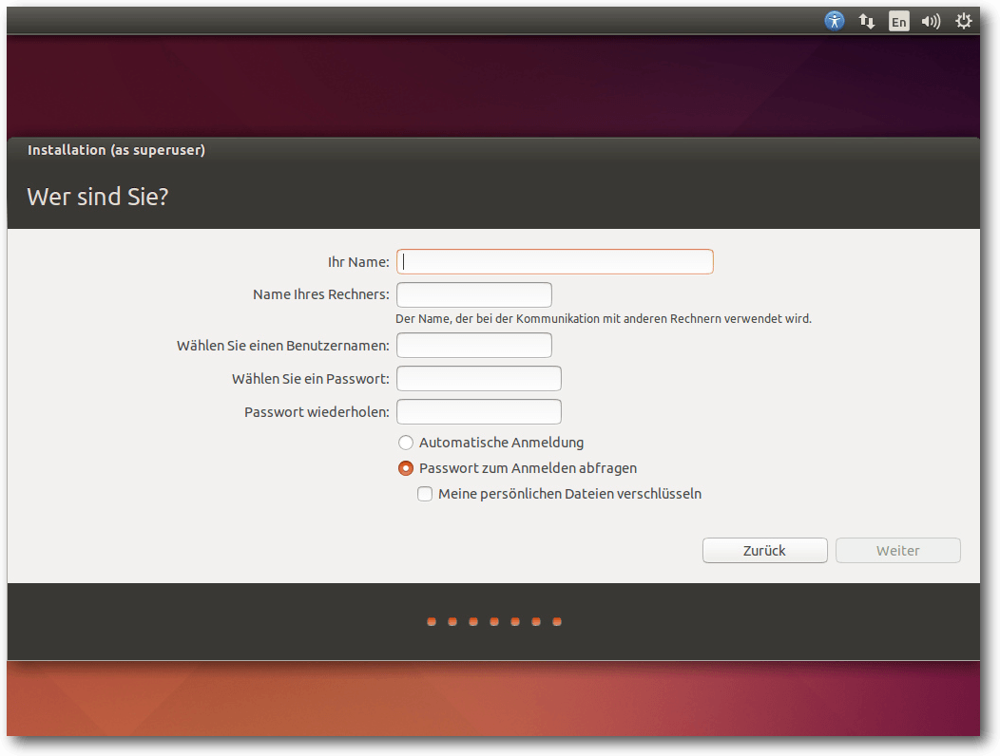Installation von Ubuntu.
Das Installationsprogramm Ubiquity bietet ähnlich wie der Debian-Installer oder Anaconda von Fedora alle Möglichkeiten an, die Festplatten zu partitionieren und das System darauf zu installieren. Die gesamte Festplatte oder einzelne Partitionen können verschlüsselt werden, und LVM wird unterstützt, auch in Form einer automatischen Partitionierung. Gegenüber der Vorversion hat sich an der Installation kaum etwas geändert. Canonical hat es nicht einmal für nötig erachtet, die bereits zuvor teilweise veraltete Installationsanleitung [6] endlich wieder einmal zu aktualisieren. Eine Installation sollte gelingen, wenn 512 MB Speicher für die Desktop-Version bzw. 256 MB beim Server vorhanden sind. Unter Umständen soll eine Installation mit 64 MB RAM bereits möglich sein. Zu empfehlen sind jedoch auf dem Desktop mindestens 1 GB, so dass alle benötigten Anwendungen zugleich ohne zu swappen laufen können. 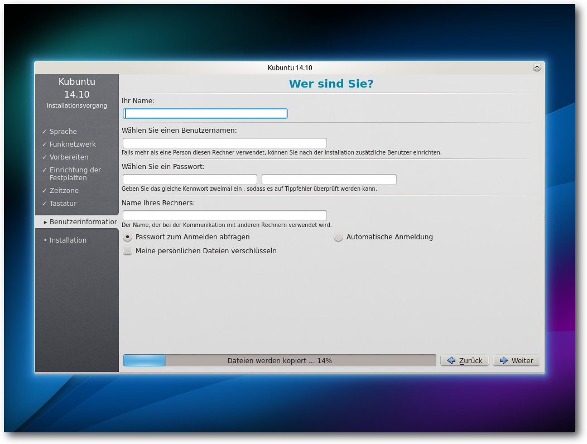
Installation von Kubuntu.
Ausstattung
Sowohl Ubuntu als auch Kubuntu starten ähnlich schnell oder sogar schneller als in den Vorversionen. Ubuntu (nicht aber Kubuntu) setzt eine Hardware-3D-Beschleunigung voraus, die bei Grafikkarten, die das nicht bieten, durch llvmpipe emuliert. Bei einer ausreichend schnellen CPU ist das Verfahren von der Geschwindigkeit immer noch gerade so erträglich. Das Grafiksystem ist bei X.org 7.7 geblieben. Allerdings wurden einige Komponenten von X.org aktualisiert, u. A. der X-Server 1.16 und Mesa 10.3. Unity liegt in Version 7.3 vor. Unter den größten Änderungen seit Ubuntu 14.04 findet sich der Linux-Kernel, der auf Version 3.16.3 aktualisiert wurde. Er enthält verbesserte Unterstützung für die Architekturen Power8 und ARM 64, Unterstützung für neuere Intel-Prozessoren, Audio-Verbesserungen, Unterstützung für den Radeon H.264 Video-Kodierer sowie für den schnelleren Übergang in den Schlafmodus und zurück. Daneben enthält er viele neue Treiber sowie Features, die nur für Spezialisten von Interesse sind. AppArmor wurde um die Möglichkeit erweitert, den Zugriff auf Sockets zu regeln. Ubuntu 14.10 führt das „Ubuntu Developer Tools Centre“ ein, das es leichter machen soll, unter Ubuntu zu entwickeln. Es lädt alle Android-Toolkits und ihre Abhängigkeiten herunter und ermöglicht, sie mit einem Klick zu starten. Es wird also anfänglich nur Android unterstützt, aber eine Erweiterung auf Go, Dart und anderes ist geplant. Oxide, eine auf Chromium beruhende Bibliothek zur Darstellung von Web-Inhalten, wurde aktualisiert. Ubuntu hat diese Bibliothek geschaffen, um Entwickler mit einer für die Lebensdauer der Distribution stabil gehaltenen Web-Engine zu versorgen, und empfiehlt allen Entwicklern, sie anstelle von anderen Bibliotheken zu verwenden. Für Entwickler stehen GCC 4.9.1 und die wichtigsten Compilerwerkzeuge bereit, sodass man simple C/C++-Programme und wohl auch den Linux-Kernel ohne weitere Umstände kompilieren kann. Bei den Bibliotheken gingen die Entwickler wohl von der Maxime aus, dass möglichst viel externe Software direkt lauffähig sein sollte, entsprechend umfangreich ist die Installation, die von glibc 2.19 bis GStreamer 1.4 und 0.10 reicht. Python ist nun in den beiden Versionen 2.7.8 und 3.4.2 vorinstalliert, wohl ebenfalls aus Gründen der Kompatibilität, da sowohl innerhalb des Ubuntu-Archivs als auch außerhalb noch viele Pakete auf Python 2 beruhen. Perl ist in Version 5.20 vorhanden, dazu gesellen sich zahlreiche Python- und Perl-Module. PulseAudio ist merkwürdigerweise in Version 4.0 installiert, obwohl es längst Version 5.0 gibt. Systemd ist auch bereits installiert (Version 208), das Standard-Init-System ist in dieser Version aber immer noch Upstart – vermutlich zum letzten Mal. Wer mag, kann Systemd durch das Hinzufügen von init=/bin/systemd zur Kernel-Kommandozeile bereits ausprobieren. Wie gewohnt hat Root keinen direkten Zugang zum System, sondern die Benutzer der Gruppe sudo können über das Kommando sudo Befehle als Root ausführen. Der Speicherverbrauch von Unity wurde offenbar etwas reduziert. Rund 465 MB benötigt die Umgebung bei einer Bildschirmauflösung von 1280x960 allein, ohne dass irgendwelche produktive Software gestartet wurde. Die Reduktion wurde hauptsächlich dadurch erreicht, dass Compiz statt 215 MB nur noch 148 MB benötigt. KDE benötigt in der Standardinstallation mit einem geöffneten Terminal-Fenster etwa 343 MB und damit ebenfalls etwas weniger als zuvor. Ein Teil dieses Speichers wird allerdings in den Swap ausgelagert, sodass zusätzliches RAM frei wird. Die Messung des Speicherverbrauchs der Desktops kann jeweils nur ungefähre Werte ermitteln, die zudem in Abhängigkeit von der Hardware und anderen Faktoren schwanken. Aber als Anhaltspunkt sollten sie allemal genügen. Auf dem Desktop bringt Ubuntu 14.10 in erster Linie Korrekturen. Unity 7.3 soll nun Monitore mit höherer DPI-Zahl besser unterstützen. Unterstützung für IPP Everywhere [7] wurde hinzugefügt. Viele Anwendungen erhielten mehr oder weniger große Verbesserungen. LibreOffice wird in Version 4.3.2 mitgeliefert. Chromium 38 und Firefox 33 sind unter den mitgelieferten Webbrowsern zu finden. Mittels Chrome ist es möglich, über Netflix [8] Filme anzusehen. Kubuntu [9] enthält in Version 14.10 KDE SC 4.14, das neben zahlreichen kleinen Verbesserungen auch viele Korrekturen enthält, aber keine nennenswerten Neuerungen bringt. Plasma 5 und die dafür benötigten Bibliotheken (KDE Frameworks) sind als technische Vorschau verfügbar. Um in ihren Genuss zu kommen, muss man allerdings ein externes Repository einbinden und in Kauf nehmen, dass Plasma 4 entfernt wird. Die anderen Varianten haben nur wenige oder gar keine Änderungen bekannt gegeben. Ubuntu GNOME [10] enthält GNOME 3.12, also nicht die neueste Version 3.14[21], mit einer optionalen GNOME-Classic-Sitzung. Laut der Ankündigung sind nicht alle Komponenten von GNOME 3.12 integriert, die fehlenden Teile sind aber über ein externes Repository erhältlich. Statt GNOME-Software wird hier das Ubuntu Software Center verwendet. Bei Xubuntu [11] wurde das Panel-Plug-in „Xfce Power Manager“ hinzugefügt. Bei Lubuntu [12] hingegen wird der Umstieg auf LXQt vorbereitet. Ubuntu Studio [13] unterstützt dank des neuen Kernels jetzt Audiogeräte mit Firewire-Anschluss.Unity
Unity, die offiziellen Desktopumgebung von Ubuntu, wurde von Version 7.2 auf 7.3 gebracht. Größere Änderungen gab es auch hier nicht. Somit bleibt Unity eine dezente, benutzbare Desktop-Umgebung, die allerdings aufgrund ihrer Unterschiede zu herkömmlichen Umgebungen (GNOME 2 oder KDE 4) von einigen Benutzern abgelehnt wird. Die meisten dieser Eigenheiten lassen sich allerdings wieder rückgängig machen. So werden weiterhin bei vielen Programmen die Menüs in die Titelleiste gebracht, um etwas Bildschirmfläche zu sparen. Nach wie vor lässt sich darüber streiten, wo die Ersparnis sein soll, denn Unity hat Leisten oben, links und unten, das ist viel im Vergleich zu KDE, wo es nur eine Leiste gibt, die auch noch automatisch ausgeblendet werden kann. Benutzer, die das Entfernen der Menüs aus den Programmfenstern als Zeitverlust ansehen und sie wieder dort haben wollen, wo sie hingehören, können das alte Verhalten mit dem unity-tweak-tool wieder herstellen. Das muss allerdings erst einmal installiert werden. Denn die Standardinstallation bringt nur die absolut notwendige Programmausstattung, die man für übliche Tätigkeiten benötigt – viele Tools gehören nicht dazu. Die Suchfunktion von Unity umfasst weiterhin standardmäßig auch Online-Shops und andere Online-Quellen. Tolerierbar ist die Internet-Suche ebenso wenig wie zuvor. In den meisten Fällen ist sie lästig und nutzlos und sollte abgeschaltet werden. Das Deaktivieren der Funktion ist weiterhin über einen Schalter in den Systemeinstellungen unter der Kategorie „Privatsphäre“ möglich. Einzelne Linsen lassen sich offenbar nur durch die Deinstallation deaktivieren. 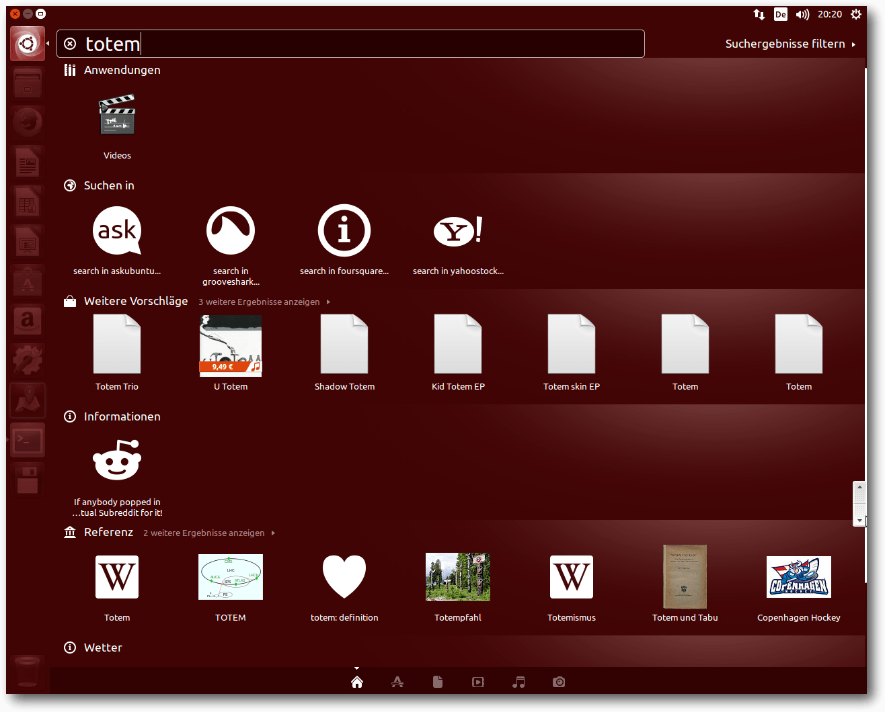Die Suche in der Übersichtsseite von Unity.
Der Standard-Webbrowser in Ubuntu ist Firefox 33. LibreOffice ist in Version 4.3.2.2 vorinstalliert. Für E-Mails ist Thunderbird 31.2 zuständig. Die sonstigen installierten Programme sind im Wesentlichen die Standard-Programme von GNOME, die zumindest grundlegend die häufigsten Aufgaben abdecken. Meist bieten sie nur Grundfunktionen, sodass man sich gerne nach anderen Programmen im Software-Center umsieht. Software-Updates und das Software-Center funktionieren wie gewohnt, hier scheint sich in den letzten Monaten nichts geändert zu haben. Will man Unity spezifisch konfigurieren, kommt man nicht umhin, neben dem unity-tweak-tool auch compizconfig-settings-manager (ccsm) und dconf-tools nachzuinstallieren. Letztere bieten noch mehr Einstellungen, jedoch teilweise eher für Experten. 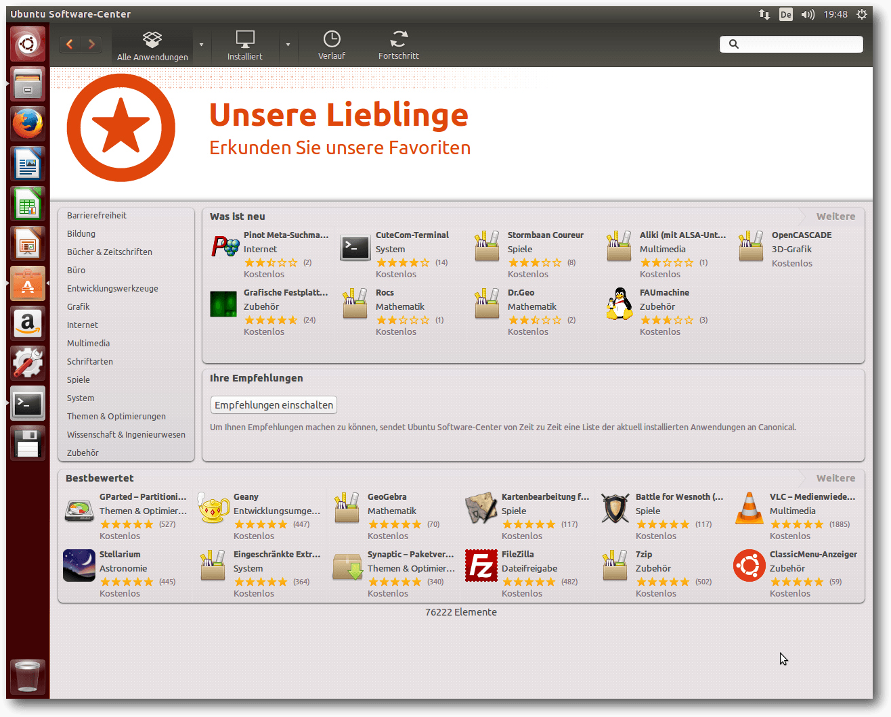
Das Ubuntu-Software-Center.
KDE
Auch wenn man mit Unity leben kann und viele es mögen, fühlen sich andere bei KDE eher heimisch. KDE SC 4.14.1 ist die Endstation von KDE 4. Der Nachfolger, Plasma Desktop 5, steht als technische Vorschau zum Ausprobieren bereit, was aber Thema eines anderen Artikel sein wird. KDE SC 4.14.1 bringt zahlreiche kleine Verbesserungen und viele Korrekturen in den KDE-Kernanwendungen, von denen allerdings keine herausgehoben werden kann. Neue Funktionen fehlen komplett. Damit sollte KDE allerdings noch besser und stabiler sein. Auch Kubuntu installiert Firefox 33 als Standard-Browser. Als Musik-Player ist hier allerdings Amarok 2.8 vorinstalliert, wie schon seit Kubuntu 13.10. KDE PIM mit Kontact ist ebenfalls in Version 4.14.1 vorinstalliert. Außerdem ist LibreOffice vorhanden. Weitere Anwendungen muss man aus den Repositorys selbst nachinstallieren, wenn man sie braucht. Die Paketverwaltung Muon blieb bei Version 2.2 und funktioniert weiterhin problemlos. 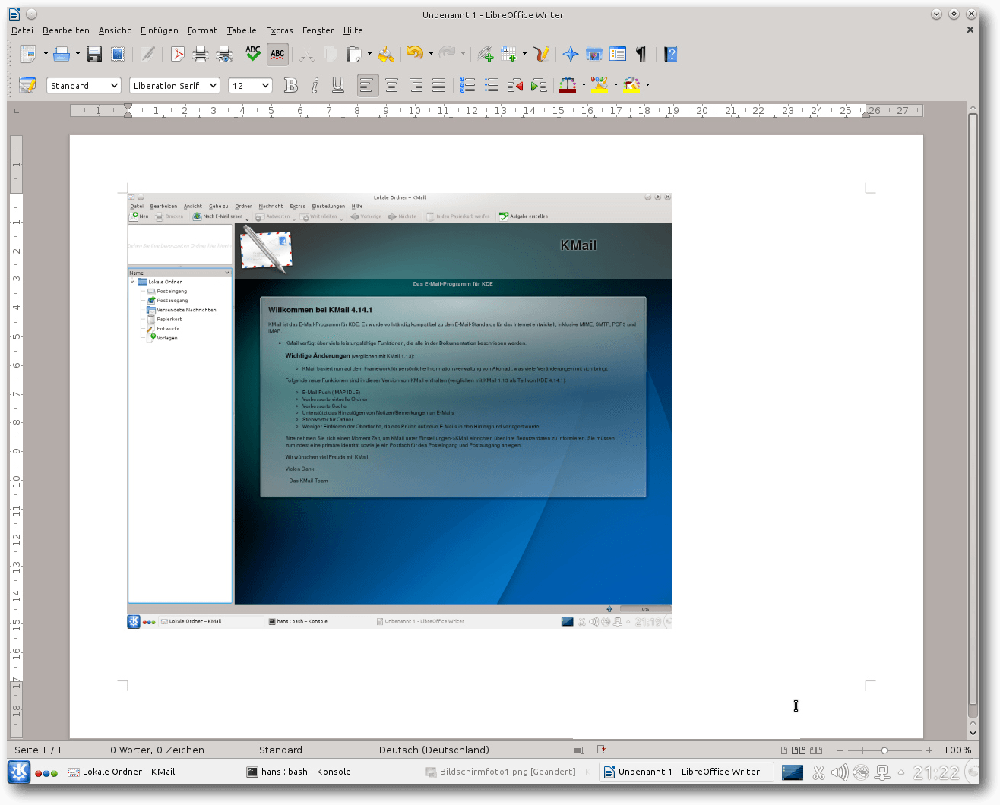LibreOffice Writer mit Screenshot von KMail.
Multimedia im Browser und auf dem Desktop
Nicht viel Neues gibt es im Multimedia-Bereich. Firefox ist jetzt in Version 33 enthalten. Mehrere Plug-ins zum Abspielen von Videos in freien Formaten sind wie immer vorinstalliert, aber nicht in Kubuntu. Die vorinstallierte Erweiterung „Ubuntu Firefox Modifications“ ist jetzt bei Version 2.9. Weitere vorinstallierte Erweiterungen sorgen für die Integration mit Unity und den Ubuntu-Online-Accounts. Neu ist jetzt OpenH264, das beim ersten Start von Firefox als Plug-in nachinstalliert wird. Dieses Plug-in stammt bekanntlich von Cisco [14] und ist erst seit Firefox 33 verfügbar, für ältere Versionen leider anscheinend nicht. Trotzdem ist das eine gute Nachricht, denn mit OpenH264 ist das Flash-Problem endgültig gelöst. Im Großen und Ganzen war es ja schon zuvor gelöst, jedoch nur mit Hilfe des proprietären Adobe-Codes oder mithilfe anderer Workarounds. Damit dürften Web-Videos jetzt fast überall funktionieren. Bei Youtube ist schwer überhaupt noch ein Flash-Video zu finden, sodass man hier auch mit dem WebM-Player über die Runden kommt. Andere Webseiten haben diesen Schwenk weg von Flash aber noch nicht gemacht. Auf dem Unity-Desktop sollte in den bekannten Anwendungen Rhythmbox und Filmwiedergabe (Totem) bei standardmäßig nicht unterstützten Formaten eine Dialogbox erscheinen, die eine Suche nach passenden GStreamer-Plug-ins ermöglicht und sie installiert. Im Gegensatz zu den letzten Versionen, wo das Verfahren nicht immer zum Erfolg führte, ist auch hier Erfreuliches zu vermelden. Die Codec-Suche ist erfolgreich und wählt auch die richtigen Pakete aus, die sich dann auch problemlos installieren lassen. Daher kann man es sich jetzt sparen, vorab im Software-Center alle GStreamer-Plug-ins installieren. Nach der Plug-in-Installation muss man die Player-Software neu starten, und alles sollte funktionieren. 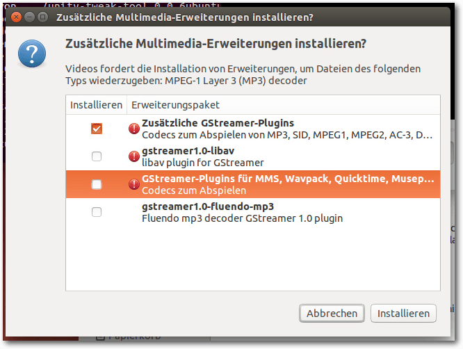Installation von zusätzlichen Multimedia-Codecs.
Unter KDE sieht es fast genauso aus, nur ist die Geschwindigkeit auch ohne 3-D-Hardware akzeptabel. Amarok ist der Standard-Audioplayer. Fehlende Plug-ins werden korrekt nachinstalliert. DragonPlayer versagte bei der Wiedergabe von Videos – nur der Ton war zu hören. Abhilfe schafft die Installation von VLC, MPlayer oder Xine.
Fazit
Ubuntu 14.10 enthält weit weniger Baustellen als gedacht. Besonders nett und nicht erwartet sind die Verbesserungen im Multimedia-Bereich, die den Komfort für die Benutzer geradezu maximieren. Die neue Version der Distribution läuft in allen Varianten gut und stellt eine solide Basis für Applikationen und Entwicklungen dar. In der allerdings kurzen Testphase kam es nicht zu nennenswerten Problemen. Das muss nicht heißen, dass alles bereits perfekt läuft. Wer sichergehen will, nicht zu viele Probleme zu erleben, sollte zumindest die Updates der ersten Wochen abwarten. Doch sollte man überhaupt auf die neue Version aktualisieren? Die Neuerung mit OpenH264 werden alle Benutzer erleben, sobald sie Firefox 33 oder neuer installieren, der inzwischen auch in Ubuntu 14.04 LTS angekommen ist. Abgesehen von einigen Aktualisierungen gibt es daher wenig Argumente, nicht bei der LTS-Version zu bleiben. Zu bedenken ist auch: Wenn man jetzt aktualisiert, ist dieselbe Arbeit in einem halben Jahr wieder fällig, da der Support für Ubuntu 14.10 im Juli 2015 endet. Letztlich bleiben die Nicht-LTS-Versionen Betaversionen, die normale Benutzer meiden sollten, wenn es keinen zwingenden Grund gibt, der für die aktuellere Version spricht. Ubuntu, Kubuntu und die anderen Varianten sind und bleiben daher eine der ersten Empfehlungen, wenn es um die Wahl der Linux-Distribution geht. Am besten allerdings in einer LTS-Version. Links[1] http://www.pro-linux.de/artikel/2/1736/ubuntu-und-kubuntu-1410.html
[2] https://de.wikipedia.org/wiki/Internet_der_Dinge
[3] http://www.pro-linux.de/news/1/21659/ubuntu-1410-freigegeben.html
[4] http://www.mythbuntu.org/
[5] https://wiki.ubuntu.com/Edubuntu
[6] https://help.ubuntu.com/14.10/installation-guide/index.html
[7] http://www.pwg.org/ipp/everywhere.html
[8] http://netflix.de/
[9] http://www.kubuntu.org/news/kubuntu-14.10
[10] https://wiki.ubuntu.com/UtopicUnicorn/ReleaseNotes/UbuntuGNOME
[11] https://wiki.ubuntu.com/UtopicUnicorn/ReleaseNotes/Xubuntu
[12] https://wiki.ubuntu.com/UtopicUnicorn/ReleaseNotes/Lubuntu
[13] https://wiki.ubuntu.com/UtopicUnicorn/ReleaseNotes/UbuntuStudio
[14] http://www.pro-linux.de/news/1/20415/cisco-will-h264-codec-als-open-source-veroeffentlichen.html
| Autoreninformation |
| Hans-Joachim Baader (Webseite) befasst sich bereits seit 1993 mit Linux. Mittlerweile ist er einer der Betreiber von Pro-Linux.de. |
Beitrag teilen Beitrag kommentierenZum Index
State of the Commons – Zustand der Creative-Commons-Lizenzen
von Dominik Wagenführ Creative-Commons-Lizenzen erfreuen sich in der ganzen Welt bei sehr vielen Schaffenden, Künstlern, Regierungen, Vereinen, Bildungseinrichtungen und anderen Institutionen einer großer Beliebtheit. Creative Commons hat Ende November einen Bericht vorgelegt, der zahlreiche Daten zeigt, wie es um die Creative-Commons-Lizenzen weltweit bestellt ist. 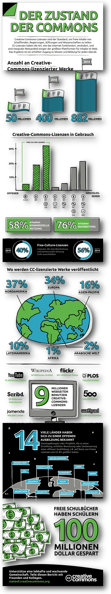Der Zustand der Commons.
© Creative Commons (Übersetzung: Dominik Wagenführ) (CC-BY-4.0) © Creative Commons (Übersetzung: Dominik Wagenführ) (CC-BY-4.0)
Einleitung
Obwohl Creative-Commons-Lizenzen [1] Standard sind, wenn es um die Verbreitung freier Inhalte im Netz geht, gab es bisher keine genau Angabe darüber, wie viele Urheber diese Lizenz einsetzen, um ihre Werke zu verbreiten, wo diese ansässig sind und wie die CC-Lizenzen eingesetzt werden. Aus diesem Grund hat Creative Commons die Daten zahlreicher Internet-Plattformen für die Verbreitung von Inhalten erfasst und ausgewertet. Zu den Plattformen zählen Seiten wie Flickr, Wikipedia, Scribd, devianART, YouTube und MusicBrainz. Zusätzlich wurde auch noch der Google Cache durchsucht. Die genaue Auswertung der Daten kann bei GitHub nachgelesen werden [2]. Am Ende der Auswertung steht ein Bericht [3], der zeigt, wie viele Werke unter einer CC-Lizenz veröffentlicht werden, aus welchen Ländern die Urheber kommen, welche CC-Lizenzen benutzt werden und vieles mehr. Das Ganze wurde auch grafisch aufbereitet und steht unter stateof.creativecommons.org [4] zur Verfügung. Eine deutsche Übersetzung der Grafik gibt es auf der GitHub-Seite [5].Benutzung der Creative-Commons-Lizenzen
Wer eine Creative-Commons-Lizenz auf seiner Internetseite nutzen will, bindet normalerweise auch das CC-Logo mit der jeweiligen richtigen Lizenz mit ein. Dieses Logo kann man auch direkt von der Creative-Commons-Seite [6] beziehen und auch so verlinken. Hierüber hat Creative Commons gezählt, wie viele solcher Hotlinks es gibt und kam auf 27 Millionen Aufrufe pro Tag. Da aber nicht jeder das Logo von der CC-Seite direkt bezieht sondern selbst auf seiner Seite lagert, ist die echte Anzahl natürlich höher. Aus diesem Grund geschah die Auswertung über den Google Cache und die o.g. Plattformen, die Urhebern eine Möglichkeit bieten, Inhalte zu verbreiten. Die Zählung der Lizenzen ergab, dass im Jahr 2014 ca. 882 Millionen Werke unter einer CC-Lizenz veröffentlicht sind. Im Gegensatz zu 2010 hat sich der Wert verdoppelt. Im Jahr 2015 wird die Milliarden-Marke vermutlich geknackt werden. Von den CC-Lizenzen, die unter die Definition der Free-Culture-Lizenzen fallen [7], wird die CC-BY-SA [8], welche die Angabe des Urhebers und die Veröffentlichung abgeleiteter Werke unter einer ähnlichen Lizenz erfordert, am häufigsten genutzt. Von den geschlosseneren Lizenzen ist die CC-BY-NC-ND [9], welche Veränderungen und kommerzielle Nutzung ausschließt, am beliebtesten. Insgesamt lassen 76% der Werke eine Veränderung zu. Gegenüber 2010 stieg der Wert der CC-Lizenzen unter Free-Culture-Definition von 40% auf 56%.Verbreitung der Creative-Commons-Lizenzen
Viele Urheber nutzen den Creative-Commons-Lizenzwähler [10], um die passende Lizenz für ihr Werk zu finden. Hierüber lassen sich auch spezielle CC-Lizenzen für 34 Länder wählen, welche kleinere Anpassungen enthalten, die die Besonderheiten nationalen Rechts mit beachten. Auch wenn nur ein Bruchteil der CC-Nutzer über die Lizenzwähler-Seite gehen, hat Creative Commons über die Zugriffsorte eine Heatmap erstellt [11]. Hieran sieht man auch sehr schön, dass CC-Lizenzen in Deutschland im Vergleich zu anderen europäischen Ländern sehr beliebt sind. Es ist aber auch klar, dass die Creative-Commons-Lizenzen vor allem in englischsprachigen Ländern hohen Anklang finden. Aber nicht nur die privaten Urheber sind wichtig. Ein Zeichen setzen auch zahlreiche Regierungen, die durch Gesetzgebungen oder Projekte die Nutzung von freien Inhalten fördern. So gibt es weltweit zahlreiche Länder, die für ihre Regierungsgeschäfte freie Software vorschreiben und freie Lizenzen nutzen, um Inhalte zu verbreiten. Auch andere Organisationen, wie zuletzt die ESA, die die Bilder der Rosetta-Sonde unter CC-Lizenz veröffentlichte [12], tragen viel dazu bei, das freie Lizenzen immer mehr Verbreitung finden.Was bringt die Zukunft?
Der Weg von Creative Commons ist noch nicht zu Ende gegangen. So gibt es drei Punkte, die die Macher als wichtig ansehen: eine bessere Unterstützung der CC-Lizenzsuite, ein einfacheres Auffinden von CC-Inhalten und Barrieren zur Verteilung der Inhalte abbauen. Wer Creative Commons unterstützen will, findet dazu auf der englischen [13] oder deutschen Seite [1] zahlreiche Informationen. Links[1] http://de.creativecommons.org/
[2] https://github.com/creativecommons/stateofthe/blob/master/data/notes.md
[3] https://stateof.creativecommons.org/report/
[4] https://stateof.creativecommons.org/
[5] https://github.com/creativecommons/stateofthe/
[6] https://licensebuttons.net/
[7] http://freedomdefined.org/Definition/De
[8] http://creativecommons.org/licenses/by-sa/4.0/deed.de
[9] http://creativecommons.org/licenses/by-nc-nd/4.0/deed.de
[10] http://creativecommons.org/choose/
[11] http://www.openheatmap.com/view.html?map=AlkoranicCrinkSaruses
[12] http://blogs.esa.int/rosetta/2014/11/04/rosetta-navcam-images-now-available-under-a-creative-commons-licence/
[13] http://creativecommons.org/
| Autoreninformation |
| Dominik Wagenführ (Webseite) nutzt Creative-Commons-Lizenzen seit vielen Jahren für seine Artikel und Werke und freut sich, wenn noch mehr Wissen frei verbreitet wird. |
Beitrag teilen Beitrag kommentierenZum Index
Der November im Kernelrückblick
von Mathias Menzer Basis aller Distributionen ist der Linux-Kernel, der fortwährend weiterentwickelt wird. Welche Geräte in einem halben Jahr unterstützt werden und welche Funktionen neu hinzukommen, erfährt man, wenn man den aktuellen Entwickler-Kernel im Auge behält.Linux 3.18
Der „erkrankte Molch“ – so nun der Name („Diseased Newt“) von Linux 3.18-rc3 [1] – entwickelte sich trotz seines neuen Namens prächtig. Die Zahl der Änderungen ist gegenüber -rc2 etwas gestiegen, allerdings fällt der Patch diesmal kleiner aus. Er bringt ein Paket umfassender Korrekturen für die Linux-Firewall netfilter mit. Außerdem wurde im Audio-Umfeld nicht mehr benötigter Code aufgeräumt (d. h. gelöscht). Die vierte Entwicklerversion [2] enthält weniger Änderungen, eine davon beseitigt aber einige Probleme im Umfeld des Dateisystems xfs. Insbesondere ist hier ein Bug genannt, um dem bereits seit 10 Jahren mit Workarounds herumprogrammiert wurde. Dave Chinner, der diese Patchsammlung einreichte, stellte klar, dass er solch umfangreiche Änderungen normalerweise nicht so spät im Entwicklungszyklus einreichen würde, wenn die Anpassungen nicht wirklich notwendig seien. Ein bisschen unruhiger ging es dann wieder bei Linux 3.18-rc5 [3] zu. Ein Satz der Änderungen betrifft die ARM-Architektur Xtensa, mit der Signal-Prozessoren mit angepasstem Befehlssatz gebaut werden können. Weitere Änderungen sind im Bereich der Netzwerk-Treiber zu finden, wo an zu vielen Stellen gearbeitet wurde, um einzelne Treiber nennen zu können. Außerdem wurde das verteilte Netzwerk-Dateisystem Ceph mit Korrekturen bedacht. Eine der größten Änderungen in Linux 3.18-rc6 [4] war die Beseitigung eines Speicherlecks an den CAN-Bus-Treibern, einem in der Automobil-Industrie besonders weit verbreiteten Bus-System. Ansonsten verteilen sich die Änderungen relativ gleichmäßig über die verschiedenen Kernel-Bereiche. Derzeit versuchen die Entwickler noch einen Fehler einzugrenzen, auf den der RedHat-Entwickler Dave Jones gestoßen ist und der sich seit Veröffentlichung von Linux 3.17 eingeschlichen haben muss.Langzeit-Kernel
Wieder einmal hat sich eine Distribution für eine Kernel-Version entschieden, die keinen „offiziellen“ Langzeit-Support erfährt – Ubuntu setzt für seine Version 14.10 auf Linux 3.16, dessen Pflege von Greg Kroah-Hartmann mit Freigabe von Linux 3.17 bereits eingestellt wurde. Da diese Ubuntu-Version bis zur Veröffentlichung des Nachfolgers im April 2015 Pflege erhalten muss, übernimmt nun das Ubuntu-Kernel-Team die weitere Aktualisierung dieses Kernels [5]. Dies kommt auch Debian zugute, deren kommende Version Jessie ebenfalls mit 3.16 ausgeliefert werden wird. Da dessen Lebenszeit jedoch etwas länger ausfallen wird als die von Ubuntu 14.10, könnte die Verantwortung auf den Debian-Entwickler Ben Hutchings übergehen oder Luis Henriques vom Ubuntu-Kernel-Team. Nach Henriques Ankündigung scheint dies jedoch noch nicht entschieden zu sein [6]. Hutchings ist kein Unbekannter, pflegt er doch bis heute die Kernel-Version 3.2, die in Debian 7 Verwendung gefunden hat.Echtzeit-Kernel
Mitte November wurde der neue stabile Zweig des Echtzeit-Kernels 3.12-rt freigegeben [7]. Der Hauptentwickler der für die Echtzeitfähigkeit notwendigen Erweiterungen, Thomas Gleixner, führt die Entwicklung jedoch nur noch als Freizeit-Projekt fort, um „nebenbei“ Arbeiten zu übernehmen, die Geld für ihn und seine Familie einbringen. Die Linux Foundation und das Open Source Automation Development Lab (OSADL) haben im Laufe des letzten Jahres versucht, Geldgeber aus der Industrie zu gewinnen, um die Entwicklung der Echtzeit-Erweiterungen weiterhin finanzieren zu können. Diese sind für die Automation eigentlich sehr wichtig, da speziell in diesem Umfeld die Verarbeitung von Daten, wie beispielsweise von Messaufnehmern, innerhalb eines bestimmten Zeitraumes erfolgt sein muss und nicht warten kann, bis irgendein Prozess seine Ressourcen wieder freigegeben hat. Sollte sich in näherer Zukunft keiner der bisherigen Nutznießer des Realtime-Zweiges finden, der die Entwicklung auch finanziell mittragen möchte, wird es nur noch sporadische Aktualisierungen geben. Unter Umständen könnte Gleixner, sollte der Abstand zum aktuellen Mainline-Kernel zu groß werden, die Entwicklung auch ganz fallen lassen.Eine Bus-Spur für den Kernel
Schon seit längerem gärt die Idee, eine Schnittstelle zur Interprozesskommunikation [8] (IPC) direkt in den Linux-Kernel einzubauen. Solch ein IPC-Bus ermöglicht den direkten Austausch von Daten zwischen einzelnen Prozessen, ohne Umwege über z. B. Dateien. Bislang existiert hierfür zwar D-Bus als Quasi-Standard für Linux-Systeme, das als eigenständiger Daemon allerdings erst relativ spät im Startvorgang zur Verfügung steht. Somit kommt es auch in erster Linie in Verbindung mit Desktop-Umgebungen wie GNOME oder KDE und auf diesen aufbauenden Anwendungen zum Einsatz. kdbus wird als IPC-System direkt im Kernel implementiert und kann so einige der für D-Bus geltenden Einschränkungen von vornherein umgehen, wie beispielsweise den Transfer umfangreicher Daten zwischen einzelnen Prozessen. Zudem wurden bekannte Schwächen von D-Bus direkt beim Entwurf berücksichtigt. So bietet kdbus die Möglichkeit, auf bestehende Daten im Speicher zu verweisen, anstatt sie in einen anderen Speicherbereich zu kopieren. Die Arbeiten an diesem System laufen bereits seit über einem Jahr und neben Greg Kroah-Hartmann wirken einige bekannte Namen mit. Auch Lennart Poettering, der dieser Tage insbesondere für die Init-Alternative systemd [9] in der Diskussion steht, hat das Design von kdbus maßgeblich gestaltet. Kroah-Hartman hat nun einen Satz an Patches für die Aufnahme in den offiziellen Zweig des Linux- Kernels vorgestellt [10]. Es ist durchaus zu erwarten, dass der Code in einer der kommenden Kernel-Versionen aufgenommen werden wird. Links[1] https://lkml.org/lkml/2014/11/2/171
[2] https://lkml.org/lkml/2014/11/9/166
[3] https://lkml.org/lkml/2014/11/16/263
[4] https://lkml.org/lkml/2014/11/23/189
[5] http://www.pro-linux.de/-0h2154ba
[6] https://lkml.org/lkml/2014/10/30/649
[7] http://www.pro-linux.de/-0h2154f4
[8] https://de.wikipedia.org/wiki/Interprozesskommunikation
[9] https://de.wikipedia.org/wiki/Systemd
[10] http://www.pro-linux.de/-0h2154af
| Autoreninformation |
| Mathias Menzer (Webseite) behält die Entwicklung des Linux-Kernels im Blick, um über kommende Funktionen von Linux auf dem Laufenden zu bleiben. |
Beitrag teilen Beitrag kommentierenZum Index
Git-Tutorium – Teil 1
von Sujeevan Vijayakumaran Zur Entwicklung von Software wird in der Regel ein Versionsverwaltungsprogramm genutzt. Es gibt zahlreiche Anwendungen, um dies zu erledigen; zu den bekannteren Programmen gehören Subversion, CVS, Mercurial, Bazaar und eben Git. Dieses mehrteilige Tutorium soll den Einstieg in die Nutzung von Git erläutern.Was ist eine Versionsverwaltung?
Für die Leser, die noch keine Erfahrung oder Ahnung von Versionsverwaltungsprogrammen haben, ist es zunächst wichtig zu wissen, was denn genau ein solches Programm macht. Die Bedeutung einer Versionsverwaltung lässt sich schon fast aus dem Wort ableiten: Es handelt sich um das Verwalten von Versionen. Konkret heißt dies, dass man von Dateien Versionen erzeugen kann, die dann sinnvoll verwaltet werden. Einzelne Versionen beinhalten keineswegs nur große Änderungen, sondern sehr wohl auch kleinere Änderungen. Viele kennen es: Man geht einer Tätigkeit nach – sei es an einem Text, einem Bild oder an einem Video – und man möchte den aktuellen Stand immer mal wieder zwischenspeichern, damit man zum einen eine Sicherung der Datei hat und zum anderen wieder auf eine ältere Version zurückspringen kann, etwa wenn etwas falsch gelaufen ist. Jede Person hat dabei verschiedene Ansätze, die einzelnen Versionen irgendwo abzulegen. Die eine Person fügt jeweils eine Versionsnummer in den Dateinamen ein, eine andere Person macht sich wiederum einzelne Ordner für jede Version mit dem aktuellen Datum, in dem die einzelnen Stände gesichert werden. Wirklich praktikabel und effizient sind keine der beiden genannten Varianten, da sich sehr schnell und sehr einfach Fehler einschleichen, etwa wenn man alte Revisionen löscht, die man gegebenenfalls hinterher doch wieder braucht. Genau hier kommen Versionsverwaltungssysteme ins Spiel. Mit einer Versionsverwaltung werden zusätzlich zu den reinen Veränderungen noch weitere Informationen zu einer Version gespeichert. Darunter fallen Informationen zum Autor, der Uhrzeit und eine Änderungsnotiz. Diese werden bei jedem Versionswechsel gespeichert. Durch die gesammelten Dateien lässt sich so schnell und einfach eine Änderungshistorie ansehen und verwalten. Falls zwischendurch Fehler in den versionierten Dateien aufgetreten sind, kann man dann wieder zurück zu einer Version springen, um von dort aus erneut weiter zu machen. Dabei ist es ganz egal, um was für eine Art von Dateien es sich handelt. Am häufigsten werden Versionsverwaltungsprogramme zur Software-Entwicklung eingesetzt. Aber nicht nur für Programmierer ist eine Versionsverwaltung sinnvoll; wie bereits geschrieben, kann der Einsatz zum Beispiel auch für Grafiker oder Autoren durchaus nützlich sein. Ein Grafiker könnte sich so Versionen von bearbeiteten Bildern speichern, um bei misslungenen Änderungen wieder zurück springen zu können. Bei Autoren geht es um Text, der ähnlich dem Quellcode von Software-Projekten gut verwaltet werden kann. Es gibt drei verschiedene Konzepte zur Versionsverwaltung: die lokale, zentrale und die verteilte Versionsverwaltung.Lokale Versionsverwaltung
Die lokale Versionsverwaltung ist wohl eher selten in produktiven Umgebungen zu finden, da sie lediglich lokal arbeitet und häufig auch nur einzelne Dateien versioniert. Das oben bereits erwähnte manuelle Erzeugen von Versionen von Dateien wäre zum Beispiel eine lokale Versionsverwaltung mit einer einzelnen Datei. Sie ist zwar ziemlich einfach zu nutzen, allerdings resultiert daraus eine hohe Fehleranfälligkeit und sie ist zudem wenig flexibel. Echte Versionsverwaltungssoftware gibt es mit SCCS [1] und RCS [2] auch. Der wohl größte Minuspunkt der lokalen Versionsverwaltung ist, dass man standardmäßig nicht mit mehreren Personen an Dateien arbeiten kann. Außerdem besteht keinerlei Datensicherheit, da die Daten nicht zusätzlich auf einem entfernen Server liegen, sofern nicht zusätzliche Backups durchgeführt werden.Zentrale Versionsverwaltung
Eine zentrale Versionsverwaltung ist hingegen häufig in produktiven Umgebungen zu finden. Subversion [3] und CVS (Concurrent Versions System [4]) sind beispielsweise Vertreter der zentralen Versionsverwaltung. Hauptmerkmal ist, dass das Repository lediglich auf einem zentralen Server liegt. „Repository“ ist ein englisches Wort für „Lager“, „Depot“ oder „Quelle“. Ein Repository ist somit ein Lager, in dem die Daten liegen. Autorisierte Nutzer eines Repositorys arbeiten dabei lokal mit einer Arbeitskopie der im Repository vorhandenen Dateien. Die Logik der Versionsverwaltung liegt dabei auf dem zentralen Server. Wenn man also auf eine andere Revision wechseln möchte oder sich die Revisionsänderungen anschauen möchte, werden stets die Daten vom Server heruntergeladen.Verteilte Versionsverwaltung
Zu den verteilten Versionsverwaltungssystemen gehört nicht nur Git [5], sondern unter anderem auch Bazaar [6] oder Mercurial [7]. Im Gegensatz zur zentralen Versionsverwaltung besitzt jeder Nutzer des Repositorys nicht nur eine Arbeitskopie, sondern das komplette Repository. Wenn also zwischen verschiedenen Revisionen gewechselt wird oder man sich die letzten Änderungen anschauen möchte, muss nur einmal das Repository „geklont“ werden. Danach stehen alle Funktionalitäten der Versionsverwaltung offline zur Verfügung. Dadurch wird nicht nur unnötiger Netzwerktraffic vermieden, sondern auch die Geschwindigkeit wird, durch den fehlenden Netzwerk-Overhead, deutlich erhöht. Zusätzlich besitzen verteilte Versionswaltungssysteme eine höhere Datensicherheit, da die Daten des Repositorys in der Regel auf vielen Rechnern verteilt liegen.Geschichtliches
Lange Zeit nutzten die Entwickler des Linux-Kernels das proprietäre Versionsverwaltungssystem BitKeeper [8]. Nach einer Lizenzänderung seitens der Herstellerfirma von BitKeeper konnte das Team um den Linux-Kernel, allen voran Linus Torvalds, BitKeeper nicht mehr kostenfrei verwenden, weswegen Linus Torvalds mit der Entwicklung von Git begann. Da die Entwicklung im Jahr 2005 begann, gehört Git zu den jüngsten Versionsverwaltungssystemen. Für Linus Torvalds war es wichtig, dass das künftige Versionsverwaltungssystem drei spezielle Eigenschaften besitzt. Dazu gehörten zum einen Arbeitsabläufe, die an BitKeeper angelehnt sind, Sicherheit gegen böswillige und unbeabsichtigte Verfälschung des Repositorys, sowie eine hohe Effizienz. Das Projekt „Monotone“ [9], ebenfalls ein Versionsverwaltungssystem, wäre fast perfekt gewesen. Es fehlte lediglich die Effizienz. Mit Git erschuf Linus Torvalds dann doch eine eigene Versionsverwaltung, die nicht auf den Quellen von Monotone oder BitKeeper beruht. Interessant ist auch die Namensnennung von Git. Git ist das englische Wort für „Blödmann“. Linus Torvalds selbst sagte spaßeshalber: „I'm an egoistical bastard, and I name all my projects after myself. First 'Linux', now 'Git'.“ (Deutsch: „Ich bin ein egoistischer Mistkerl, und ich nenne alle meine Projekte nach mir selbst. Erst 'Linux' und nun 'Git'.“) Natürlich gibt es auch richtige Gründe, das Projekt „git“ zu nennen. Zum einen enthält das Wort lediglich drei Buchstaben, was das Tippen auf der Tastatur erleichtert, zum anderen gab es kein genutztes UNIX-Kommando, mit dem es kollidieren würde.Git-Repository starten
Git bietet einige interessante Funktionen, die nach und nach in diesem Tutorium vorgestellt werden. Zunächst muss man Git installieren. Die gängigen Linux-Distributionen stellen Git in ihrer Paketverwaltung unter dem Paketnamen git bereit. Für andere Plattformen bietet die Git-Projekthomepage eine Download-Seite [10]. Um die Nutzung von Git sinnvoll zu erlernen, bietet es sich an, die im Tutorium angeführten Befehle ebenfalls auszuführen, um die Arbeitsweise vollständig nachvollziehen zu können. Damit dieses Tutorium einen sinnvollen Praxis-Bezug hat, wird im Laufe der Zeit eine kleine statische Webseite mit dem HTML-Framework „Bootstrap“ [11] gebaut. Zu Beginn wird zunächst ein leeres Projektverzeichnis erzeugt, in dem im Anschluss die Projekt-Dateien gespeichert werden. Dazu legt man zuerst den Ordner Webseite-mit-Git an und wechselt dort hinein.$ mkdir Webseite-mit-Git
$ cd Webseite-mit-Git
Jetzt kann man mit dem folgendem Befehl ein Git-Repository anlegen:
$ cd Webseite-mit-Git
$ git init
Initialisierte leeres Git-Repository in /home/sujee/Webseite-mit-Git/.git/
Mit diesem Befehl erzeugt Git also ein leeres Repository im Projektordner. Dazu
legt Git, wie es die Ausgabe bereits mitteilt, ein Unterverzeichnis .git im
Projektverzeichnis an.
Initialisierte leeres Git-Repository in /home/sujee/Webseite-mit-Git/.git/
$ ls -l .git
insgesamt 32
drwxr-xr-x 2 sujee sujee 4096 20. Jul 16:41 branches
-rw-r--r-- 1 sujee sujee 92 20. Jul 16:41 config
-rw-r--r-- 1 sujee sujee 73 20. Jul 16:41 description
-rw-r--r-- 1 sujee sujee 23 20. Jul 16:41 HEAD
drwxr-xr-x 2 sujee sujee 4096 20. Jul 16:41 hooks
drwxr-xr-x 2 sujee sujee 4096 20. Jul 16:41 info
drwxr-xr-x 4 sujee sujee 4096 20. Jul 16:41 objects
drwxr-xr-x 4 sujee sujee 4096 20. Jul 16:41 refs
In diesem Ordner werden noch einige weitere Unterverzeichnisse angelegt, die
man mit dem Befehl ls -l .git einsehen kann.
Wie man sieht, erzeugt Git einige Verzeichnisse; dort werden auch Daten
gespeichert. Das .git-Verzeichnis ist das einzige Verzeichnis, in dem Git die
Informationen des Repositorys speichert. Daher sollte man dieses Verzeichnis
keinesfalls löschen, da man sonst alle Daten des Repositorys verliert,
insbesondere alle Revisionen. Da zu diesem Zeitpunkt in dem Beispielrepository
keinerlei Operationen mit Git durchgeführt worden sind, wäre das in diesem
Beispiel natürlich nicht sonderlich tragisch. Man sollte allerdings die Dateien
nur anfassen, wenn man weiß was man tut.
insgesamt 32
drwxr-xr-x 2 sujee sujee 4096 20. Jul 16:41 branches
-rw-r--r-- 1 sujee sujee 92 20. Jul 16:41 config
-rw-r--r-- 1 sujee sujee 73 20. Jul 16:41 description
-rw-r--r-- 1 sujee sujee 23 20. Jul 16:41 HEAD
drwxr-xr-x 2 sujee sujee 4096 20. Jul 16:41 hooks
drwxr-xr-x 2 sujee sujee 4096 20. Jul 16:41 info
drwxr-xr-x 4 sujee sujee 4096 20. Jul 16:41 objects
drwxr-xr-x 4 sujee sujee 4096 20. Jul 16:41 refs
Git Konfiguration
Da im vorigen Schritt bereits ein leeres Repository angelegt worden ist, kann man nun ein Commit hinzufügen. Was genau ein Commit ist und wie man einen Commit tätigt, wird weiter unten im Artikel noch erläutert. Denn zunächst muss man noch seine Git-Installation konfigurieren. Vorerst werden allerdings nur zwei Dinge konfiguriert: Der eigene Entwicklername und dessen E-Mail-Adresse. Mit den folgenden Befehlen setzt man den eigenen Namen sowie die eigene E-Mail-Adresse:$ git config --global user.name "Sujeevan Vijayakumaran"
$ git config --global user.email mail@svij.org
Mit diesen beiden Befehlen wird die Datei ~/.gitconfig angelegt. Wenn man
die Datei öffnet, steht Folgendes darin:
$ git config --global user.email mail@svij.org
[user]
name = Sujeevan Vijayakumaran
email = mail@svij.org
Mit git config -l lässt sich über die Kommandozeile die Konfiguration
ebenfalls ansehen.
Es muss beachtet werden, dass bei den oben genannten Befehlen die Git-Identität
global für den Benutzer gesetzt wird. Wenn man lediglich für einzelne Git-Repositorys
spezifische Einstellungen setzen will, dann reicht es, wenn man den
Aufruf-Parameter --global weg lässt. Dies ist häufig dann sinnvoll, wenn man
verschiedene E-Mail-Adressen für verschiedene Projekte nutzt. Die angegebenen
Informationen zu einem Entwickler sind nämlich für alle Personen einsehbar,
welche mindestens Lese-Rechte im Repository besitzen, sofern der Entwickler
mindestens ein Commit getätigt hat.
name = Sujeevan Vijayakumaran
email = mail@svij.org
Der erste Commit
Jetzt beginnt das echte Arbeiten mit dem Repository. Zu Beginn ist das Repository leer, da keine Dateien vorhanden sind. Es müssen also zunächst einige Ordner und/oder Dateien angelegt werden. Der Befehl git status zeigt immer den aktuellen Status des Repositorys an. Es gibt bisher noch keine Commits, weshalb Git meldet, dass es sich um die „Initiale Version“ handelt.$ git status
Auf Branch master
Initialer Commit
nichts zu committen (Erstellen/Kopieren Sie Dateien und benutzen Sie "git add" zum Beobachten)
Da bisher noch keine Dateien in dem Projekt-Verzeichnis vorhanden sind, meldet Git, dass
nichts zu committen ist. Für das Beispiel-Projekt „Webseite mit Git“ muss
zuerst das HTML-Framework „Bootstrap“ heruntergeladen und anschließend entpackt
werden. Zum Schluss kann das heruntergeladene ZIP-Paket wieder entfernt werden.
Auf Branch master
Initialer Commit
nichts zu committen (Erstellen/Kopieren Sie Dateien und benutzen Sie "git add" zum Beobachten)
$ wget https://github.com/twbs/bootstrap/releases/download/v3.2.0/bootstrap-3.2.0-dist.zip
$ unzip bootstrap-3.2.0-dist.zip
$ mv bootstrap-3.2.0-dist/* .
$ rmdir bootstrap-3.2.0-dist && rm bootstrap-3.2.0-dist.zip
Einige der oben aufgeführten Befehle geben Text auf der Standard-Ausgabe aus,
welcher hier aus Gründen der Übersichtlichkeit weggelassen worden ist.
Nachdem die Dateien des „Bootstrap“-Frameworks nun im Projekt-Verzeichnis gelandet sind, bietet es sich an,
noch einmal git status auszuführen.
$ unzip bootstrap-3.2.0-dist.zip
$ mv bootstrap-3.2.0-dist/* .
$ rmdir bootstrap-3.2.0-dist && rm bootstrap-3.2.0-dist.zip
$ git status
Auf Branch master
Initialer Commit
Unbeobachtete Dateien:
(benutzen Sie "git add <Datei>..." um die Änderungen zum Commit vorzumerken)
css/
fonts/
js/
nichts zum Commit vorgemerkt, aber es gibt unbeobachtete Dateien (benutzen Sie t<git add> zum Beobachten)
Wie man sieht, zeigt Git nun an, dass unbeobachtete Dateien vorhanden sind.
Unbeobachtete Dateien sind Dateien, die noch nicht von Git verwaltet werden und für
Git somit auch noch nicht bekannt sind. Mit dem Befehl git add kann man sowohl Dateien als auch ganze Ordner
zu dem Staging-Bereich hinzufügen. Der Staging-Bereich ist der Bereich, in den
die Dateien hinzugefügt werden, um diese für einen nachfolgenden Commit vorzumerken.
Zunächst wird nur der Ordner css hinzugefügt.
Auf Branch master
Initialer Commit
Unbeobachtete Dateien:
(benutzen Sie "git add <Datei>..." um die Änderungen zum Commit vorzumerken)
css/
fonts/
js/
nichts zum Commit vorgemerkt, aber es gibt unbeobachtete Dateien (benutzen Sie t<git add> zum Beobachten)
$ git add css/
Eine Ausgabe erfolgt bei erfolgreicher Ausführung nicht. Ein erneutes Ausführen
von git status gibt folgendes aus:
$ git status
Auf Branch master
Initialer Commit
zum Commit vorgemerkte Änderungen:
(benutzen Sie "git rm --cached <Datei>..." zum Entfernen aus der Staging-Area)
neue Datei: css/bootstrap-theme.css
neue Datei: css/bootstrap-theme.css.map
neue Datei: css/bootstrap-theme.min.css
neue Datei: css/bootstrap.css
neue Datei: css/bootstrap.css.map
neue Datei: css/bootstrap.min.css
Unbeobachtete Dateien:
(benutzen Sie "git add <Datei>..." um die Änderungen zum Commit vorzumerken)
fonts/
js/
Durch das Hinzufügen des Ordners css werden die einzelnen Dateien des
Ordners für den nächsten Commit vorgemerkt. Wenn man nicht den ganzen Ordner,
sondern nur einzelne Dateien hinzufügen möchte, geht das natürlich auch:
Auf Branch master
Initialer Commit
zum Commit vorgemerkte Änderungen:
(benutzen Sie "git rm --cached <Datei>..." zum Entfernen aus der Staging-Area)
neue Datei: css/bootstrap-theme.css
neue Datei: css/bootstrap-theme.css.map
neue Datei: css/bootstrap-theme.min.css
neue Datei: css/bootstrap.css
neue Datei: css/bootstrap.css.map
neue Datei: css/bootstrap.min.css
Unbeobachtete Dateien:
(benutzen Sie "git add <Datei>..." um die Änderungen zum Commit vorzumerken)
fonts/
js/
$ git add fonts/glyphicons-halflings-regular.eot
Es bietet sich anschließend noch einmal an, git status auszuführen:
$ git status
Auf Branch master
Initialer Commit
zum Commit vorgemerkte Änderungen:
(benutzen Sie "git rm --cached <Datei>..." zum Entfernen aus der Staging-Area)
neue Datei: css/bootstrap-theme.css
neue Datei: css/bootstrap-theme.css.map
neue Datei: css/bootstrap-theme.min.css
neue Datei: css/bootstrap.css
neue Datei: css/bootstrap.css.map
neue Datei: css/bootstrap.min.css
neue Datei: fonts/glyphicons-halflings-regular.eot
Unbeobachtete Dateien:
(benutzen Sie "git add <Datei>..." um die Änderungen zum Commit vorzumerken)
fonts/glyphicons-halflings-regular.svg
fonts/glyphicons-halflings-regular.ttf
fonts/glyphicons-halflings-regular.woff
js/
Vorher wurde das komplette css-Verzeichnis hinzugefügt. Mit dem Hinzufügen
einer einzelnen Datei wird nun nicht mehr der Ordner fonts von git status allgemein
gelistet, sondern es werden stattdessen explizit alle einzelnen Dateien aufgelistet.
Diesmal werden alle restlichen Dateien, die noch nicht beobachtet werden,
für den Commit
hinzufügt:
Auf Branch master
Initialer Commit
zum Commit vorgemerkte Änderungen:
(benutzen Sie "git rm --cached <Datei>..." zum Entfernen aus der Staging-Area)
neue Datei: css/bootstrap-theme.css
neue Datei: css/bootstrap-theme.css.map
neue Datei: css/bootstrap-theme.min.css
neue Datei: css/bootstrap.css
neue Datei: css/bootstrap.css.map
neue Datei: css/bootstrap.min.css
neue Datei: fonts/glyphicons-halflings-regular.eot
Unbeobachtete Dateien:
(benutzen Sie "git add <Datei>..." um die Änderungen zum Commit vorzumerken)
fonts/glyphicons-halflings-regular.svg
fonts/glyphicons-halflings-regular.ttf
fonts/glyphicons-halflings-regular.woff
js/
$ git add fonts/ js/
Alternativ kann man auch den Befehl git add -A ausführen, um generell alle
unbeobachtete Dateien hinzuzufügen. Eine Ausgabe erscheint bei erfolgreicher
Ausführung nicht. Aber Achtung: Dies sollte man nur tun, wenn man sicher ist,
dass sonst keine weiteren temporären Dateien vorhanden sind, die nicht in dem
Commit landen sollen.
Falls aus Versehen doch Dateien zum Staging Bereich hinzugefügt worden sind,
kann man sie ganz leicht mit git rm --cached <Datei> wieder entfernen.
Nach einem erneuten Ausführen von git status werden alle hinzugefügten
Dateien aus den drei Unterordnern aufgelistet. Es bietet es sich nicht nur für
Anfänger an, jedes Mal vor einem Commit die hinzugefügten Dateien mittels
git status zu überprüfen, um zu vermeiden, dass ungewollt Dateien in
das Repository eingetragen werden.
$ git status
Auf Branch master
Initialer Commit
zum Commit vorgemerkte Änderungen:
(benutzen Sie "git rm --cached <Datei>..." zum Entfernen aus der Staging-Area)
neue Datei: css/bootstrap-theme.css
neue Datei: css/bootstrap-theme.css.map
neue Datei: css/bootstrap-theme.min.css
neue Datei: css/bootstrap.css
neue Datei: css/bootstrap.css.map
neue Datei: css/bootstrap.min.css
neue Datei: fonts/glyphicons-halflings-regular.eot
neue Datei: fonts/glyphicons-halflings-regular.svg
neue Datei: fonts/glyphicons-halflings-regular.ttf
neue Datei: fonts/glyphicons-halflings-regular.woff
neue Datei: js/bootstrap.js
neue Datei: js/bootstrap.min.js
Wenn alle Dateien korrekt mit git add eingetragen worden sind, kann man den
ersten Commit tätigen. Der Commit enthält dabei dann eben genau die Dateien,
die man mit git add zum Staging Bereich hinzugefügt hatte. Dateien, die man
eventuell ausgelassen hat, bleiben unangetastet.
Mit dem folgenden Befehl wird der erste Commit erzeugt.
Auf Branch master
Initialer Commit
zum Commit vorgemerkte Änderungen:
(benutzen Sie "git rm --cached <Datei>..." zum Entfernen aus der Staging-Area)
neue Datei: css/bootstrap-theme.css
neue Datei: css/bootstrap-theme.css.map
neue Datei: css/bootstrap-theme.min.css
neue Datei: css/bootstrap.css
neue Datei: css/bootstrap.css.map
neue Datei: css/bootstrap.min.css
neue Datei: fonts/glyphicons-halflings-regular.eot
neue Datei: fonts/glyphicons-halflings-regular.svg
neue Datei: fonts/glyphicons-halflings-regular.ttf
neue Datei: fonts/glyphicons-halflings-regular.woff
neue Datei: js/bootstrap.js
neue Datei: js/bootstrap.min.js
$ git commit -m "Bootstrap hinzugefügt."
[master (Basis-Commit) 7f1c942] Bootstrap hinzugefügt.
12 files changed, 9006 insertions(+)
create mode 100644 css/bootstrap-theme.css
create mode 100644 css/bootstrap-theme.css.map
create mode 100644 css/bootstrap-theme.min.css
create mode 100644 css/bootstrap.css
create mode 100644 css/bootstrap.css.map
create mode 100644 css/bootstrap.min.css
create mode 100644 fonts/glyphicons-halflings-regular.eot
create mode 100644 fonts/glyphicons-halflings-regular.svg
create mode 100644 fonts/glyphicons-halflings-regular.ttf
create mode 100644 fonts/glyphicons-halflings-regular.woff
create mode 100644 js/bootstrap.js
create mode 100644 js/bootstrap.min.js
Der Befehl speichert erst an diesem Punkt den aktuellen Staging-Bereich in
einen Commit. Mit dem Parameter -m kann eine Commit-Nachricht direkt
übergeben werden. Diese fasst in der Regel die aktuellen Änderungen zusammen,
sodass andere Mitarbeiter in dem Repository die Änderungen in dem Commit
schnell und einfach nachvollziehen können. Man kann auch einen Commit erzeugen,
ohne den Parameter -m anzugeben. Stattdessen öffnet sich der Standard-Editor
des Systems, in welchem man dann die Commit-Nachricht eintippen kann.
Ein erneutes git status zeigt nach dem Commit erst mal keine Änderungen an.
Der erste Commit ist getätigt. Dieser wird häufig initialer Commit oder Basis-Commit
genannt,
weil er der erste Commit des Repositorys ist, auf
welchem die anderen Commits aufbauen.
[master (Basis-Commit) 7f1c942] Bootstrap hinzugefügt.
12 files changed, 9006 insertions(+)
create mode 100644 css/bootstrap-theme.css
create mode 100644 css/bootstrap-theme.css.map
create mode 100644 css/bootstrap-theme.min.css
create mode 100644 css/bootstrap.css
create mode 100644 css/bootstrap.css.map
create mode 100644 css/bootstrap.min.css
create mode 100644 fonts/glyphicons-halflings-regular.eot
create mode 100644 fonts/glyphicons-halflings-regular.svg
create mode 100644 fonts/glyphicons-halflings-regular.ttf
create mode 100644 fonts/glyphicons-halflings-regular.woff
create mode 100644 js/bootstrap.js
create mode 100644 js/bootstrap.min.js
$ git status
# Auf Zweig master
nichts einzutragen, Arbeitsverzeichnis sauber
Mit git log kann man die Historie des Repositorys anschauen. Bei nur
einem Commit ist es in diesem Fall natürlich sehr kurz.
# Auf Zweig master
nichts einzutragen, Arbeitsverzeichnis sauber
$ git log
commit 7f1c942a8275fdeab84ebee61e6fe43a6d48e888
Author: Sujeevan Vijayakumaran <mail@svij.org>
Date: Sun Jul 20 17:24:13 2014 +0200
Bootstrap hinzugefügt.
Jeder Commit besitzt eine eindeutige ID
auf die man sich beziehen kann. Dies kann u. A.
dafür genutzt werden, um das Git-Log zweier
Revisionen anzusehen oder um einen Commit
rückgängig zu machen. Die ID ist eine SHA1-Checksumme, die aus den
Änderungen erzeugt wird. Weiterhin werden auch Datum und Autor im
Commit vermerkt.
Nachdem der erste Commit erfolgreich erledigt ist, kann die Arbeit beginnen. Die
Webseite, die mit diesem Tutorium angelegt wird, braucht zunächst eine
index.html-Datei mit folgendem Inhalt:
commit 7f1c942a8275fdeab84ebee61e6fe43a6d48e888
Author: Sujeevan Vijayakumaran <mail@svij.org>
Date: Sun Jul 20 17:24:13 2014 +0200
Bootstrap hinzugefügt.
<!DOCTYPE html>
<html lang="en">
<head>
<meta charset="utf-8">
<meta http-equiv="X-UA-Compatible" content="IE=edge">
<meta name="viewport" content="width=device-width, initial-scale=1">
<title>Bootstrap 101 Template</title>
<!-- Bootstrap -->
<link href="css/bootstrap.min.css" rel="stylesheet">
</head>
<body>
<h1>Hello, world!</h1>
<!-- jQuery (necessary for Bootstrap's JavaScript plugins) -->
<script src="https://ajax.googleapis.com/ajax/libs/jquery/1.11.1/jquery.min.js"></script>
<!-- Include all compiled plugins (below), or include individual files as needed -->
<script src="js/bootstrap.min.js"></script>
</body>
</html>
Listing: index.html
Die Datei dient als Basis-Template für das HTML-Framework Bootstrap. Sie wird
zunächst nicht von Git beobachtet, da die Datei neu ist. Auch diese Datei muss
in das Repository committet werden:
<html lang="en">
<head>
<meta charset="utf-8">
<meta http-equiv="X-UA-Compatible" content="IE=edge">
<meta name="viewport" content="width=device-width, initial-scale=1">
<title>Bootstrap 101 Template</title>
<!-- Bootstrap -->
<link href="css/bootstrap.min.css" rel="stylesheet">
</head>
<body>
<h1>Hello, world!</h1>
<!-- jQuery (necessary for Bootstrap's JavaScript plugins) -->
<script src="https://ajax.googleapis.com/ajax/libs/jquery/1.11.1/jquery.min.js"></script>
<!-- Include all compiled plugins (below), or include individual files as needed -->
<script src="js/bootstrap.min.js"></script>
</body>
</html>
$ git add index.html
$ git commit -m "index.html hinzugefügt."
[master 4cc7ce4] index.html hinzugefügt.
1 file changed, 21 insertions(+)
create mode 100644 index.html
Hiermit wurde also der zweite Commit erzeugt. Der Befehl git log listet
beide auf:
$ git commit -m "index.html hinzugefügt."
[master 4cc7ce4] index.html hinzugefügt.
1 file changed, 21 insertions(+)
create mode 100644 index.html
$ git log
commit 4cc7ce45fb1a73d10325b465062d1ffa3435702f
Author: Sujeevan Vijayakumaran <mail@svij.org>
Date: Sun Jul 20 17:37:51 2014 +0200
index.html hinzugefügt.
commit 7f1c942a8275fdeab84ebee61e6fe43a6d48e888
Author: Sujeevan Vijayakumaran <mail@svij.org>
Date: Sun Jul 20 17:24:13 2014 +0200
Bootstrap hinzugefügt.
Da das Grundgerüst der Webseite steht, kann man die Startseite index.html
nach Belieben anpassen. Die Webseite braucht jetzt einen Titel im
HTML-Head und einen kleinen Inhalt im Body.
Um den Titel zu verändern, reicht es, Zeile 7 mit folgendem Inhalt zu
überschreiben:
commit 4cc7ce45fb1a73d10325b465062d1ffa3435702f
Author: Sujeevan Vijayakumaran <mail@svij.org>
Date: Sun Jul 20 17:37:51 2014 +0200
index.html hinzugefügt.
commit 7f1c942a8275fdeab84ebee61e6fe43a6d48e888
Author: Sujeevan Vijayakumaran <mail@svij.org>
Date: Sun Jul 20 17:24:13 2014 +0200
Bootstrap hinzugefügt.
<title>Webseite mit Git</title>
Statt der Überschrift „Hallo Welt“ wird in diesem Beispiel Git in Zeile 12 gegrüßt:
<h1>Hallo Git!</h1>
Beide Dateien können jeweils mit einem Editor bearbeitet werden. Nachdem man
diese Änderungen durchgeführt hat, kann man sich alle Änderungen mit
git diff anschauen. Doch zunächst lohnt sich mal wieder ein Blick auf die
Ausgabe von git status.
$ git status
Auf Branch master
Änderungen, die nicht zum Commit vorgemerkt sind:
(benutzen Sie "git add <Datei>..." um die Änderungen zum Commit vorzumerken)
(benutzen Sie "git checkout -- <Datei>..." um die Änderungen im Arbeitsverzeichnis zu verwerfen)
geändert: index.html
keine Änderungen zum Commit vorgemerkt (benutzen Sie t<git add> und/oder "git commit -a")
Git bemerkt automatisch, dass sich der Inhalt von index.html verändert hat.
Die Ausgabe von git diff zeigt letztendlich die Änderungen an der Datei an:
Auf Branch master
Änderungen, die nicht zum Commit vorgemerkt sind:
(benutzen Sie "git add <Datei>..." um die Änderungen zum Commit vorzumerken)
(benutzen Sie "git checkout -- <Datei>..." um die Änderungen im Arbeitsverzeichnis zu verwerfen)
geändert: index.html
keine Änderungen zum Commit vorgemerkt (benutzen Sie t<git add> und/oder "git commit -a")
$ git diff
diff --git a/index.html b/index.html
index 7a050c7..ea3b0af 100644
--- a/index.html
+++ b/index.html
@@ -5,13 +5,13 @@
<meta charset="utf-8">
<meta http-equiv="X-UA-Compatible" content="IE=edge">
<meta name="viewport" content="width=device-width, initial-scale=1">
- <title>Bootstrap 101 Template</title>
+ <title>Webseite mit Git</title>
<!-- Bootstrap -->
<link href="css/bootstrap.min.css" rel="stylesheet">
</head>
<body>
- <h1>Hello, world!</h1>
+ <h1>Hallo Git!</h1>
<!-- jQuery (necessary for Bootstrap's JavaScript plugins) -->
<script src="https://ajax.googleapis.com/ajax/libs/jquery/1.11.1/jquery.min.js"></script>
Git zeigt die Unterschiede zwischen der aktuellen Datei und der Datei an, die
zuletzt committet wurde. Entfernte Zeilen werden mit einem Minus zu Beginn der
Zeile angezeigt, neu hinzugefügte Zeilen wiederum mit einem Plus. Dasselbe
geschieht bei geänderten Zeilen.
Tipp: Zur besseren Übersicht über die Ausgaben von Git im Terminal bietet es
sich an, die Farbausgabe zu aktivieren. Dies kann global in der Konfiguration
mit folgenden Befehl gesetzt werden:
diff --git a/index.html b/index.html
index 7a050c7..ea3b0af 100644
--- a/index.html
+++ b/index.html
@@ -5,13 +5,13 @@
<meta charset="utf-8">
<meta http-equiv="X-UA-Compatible" content="IE=edge">
<meta name="viewport" content="width=device-width, initial-scale=1">
- <title>Bootstrap 101 Template</title>
+ <title>Webseite mit Git</title>
<!-- Bootstrap -->
<link href="css/bootstrap.min.css" rel="stylesheet">
</head>
<body>
- <h1>Hello, world!</h1>
+ <h1>Hallo Git!</h1>
<!-- jQuery (necessary for Bootstrap's JavaScript plugins) -->
<script src="https://ajax.googleapis.com/ajax/libs/jquery/1.11.1/jquery.min.js"></script>
$ git config --global color.ui true
Alle gelöschten Zeilen werden mit dieser Option rot dargestellt und neu hinzugefügte Zeilen
grün. Dieser Konfigurationsschalter wirkt sich allerdings nicht nur hier aus,
sondern auch an weiteren Stellen.
Die Änderungen können wie gehabt wieder in den Staging-Bereich gebracht und anschließend committet werden:
$ git add index.html
$ git commit -m "Titel und Überschrift angepasst."
[master 24e65af] Titel und Überschrift angepasst.
1 file changed, 2 insertions(+), 2 deletions(-)
Wenn man alle Befehle wie angegeben ausgeführt hat, besitzt das Repository insgesamt drei
Commits.
$ git commit -m "Titel und Überschrift angepasst."
[master 24e65af] Titel und Überschrift angepasst.
1 file changed, 2 insertions(+), 2 deletions(-)
Fazit
In diesem Teil wurden die grundlegendsten Git-Kommandos erläutert. Man weiß nun unter anderem, wie man Dateien zu einem Repository hinzufügt, ein Commit tätigt und wie man sich das Repository-Log anschauen kann. Der nächste Teil behandelt das Branching Modell von Git. Links[1] https://de.wikipedia.org/wiki/SCCS
[2] https://de.wikipedia.org/wiki/Revision_Control_System
[3] https://de.wikipedia.org/wiki/Subversion
[4] https://de.wikipedia.org/wiki/Concurrent_Versions_System
[5] http://git-scm.com/
[6] http://bazaar.canonical.com/en/
[7] http://mercurial.selenic.com/
[8] http://www.bitkeeper.com/
[9] http://www.monotone.ca/
[10] http://git-scm.com/downloads
[11] http://getbootstrap.com/
| Autoreninformation |
| Sujeevan Vijayakumaran (Webseite) setzt seit drei Jahren Git zur Versionsverwaltung ein. Dabei nutzt er es nicht nur zur Software-Entwicklung, sondern auch für das Schreiben von Artikeln. |
Beitrag teilen Beitrag kommentierenZum Index
Shellskript podfetch – Podcasts automatisch herunterladen
von Dr. Diether Knof In diesem Artikel wird ein Skript, genannt „podfetch“, erstellt. Mit „podfetch“ können Audiodateien aus einem Podcast heruntergeladen werden. Der Schwerpunkt dieses Artikels liegt darauf, die Herangehensweise bei der Erstellung zu zeigen. Für eine Erläuterung der Befehle wird auf die angegebenen Artikel sowie die entsprechende Hilfe (--help, man) verwiesen.Anforderungen beschreiben
Ausgangspunkt der Programmierung ist, dass der Anwender eine neue Anforderung an den Computer hat. Zuerst sollten diese beschrieben werden. Sie müssen nicht abschließend sein sondern können später angepasst werden. Für „podfetch“ sind die Anforderungen:- Die Audiodateien werden aus einem Podcast heruntergeladen, damit sie auf einen MP3-Player übertragen werden können.
- Werden die Audiodateien auf dem Rechner gelöscht (auf den MP3-Player verschoben), werden sie nicht noch einmal heruntergeladen.
- Das Herunterladen wird automatisch regelmäßig durchgeführt.
$ apt-cache search podcast
die Pakete amarok, gpodder, podget, podracer und rhythmbox, die
eventuell die obigen Anforderungen erfüllen. Ein Test dieser Programme zeigt,
dass podget die gewünschte Funktionalität liefert. Damit ist das Ziel
eigentlich erreicht, aber Selbermachen macht mehr Spaß.
Bei der Erstellung des Skriptes wird zuerst auf der Konsole an einem konkretem
Beispiel der Befehlsablauf entwickelt. Diese Befehle werden in ein Skript
geschrieben. Anschließend wird die Angabe des konkreten Falls im Skript durch
eine allgemeinere Benutzerschnittstelle ersetzt. Zum Schluss wird das Skript
noch abgerundet.
Audiodateien herunterladen
Zum Testen wird als Beispiel der Podcast „Auf ein Wort“ von NDR Info genommen – die Dateien sind relativ klein (je 2 bis 3 MB), das ist gut zum Testen. Um die Audiodateien herunterzuladen, müssen deren Internet-Adressen herausgefunden werden. Diese stehen in der Podcast-Datei des Anbieters. Auf der Internet-Seite [1] ist der Podcast hinter der Schaltfläche „Abonnieren“ versteckt. Im Browser lässt sich die Adresse des Podcasts (http://www.ndr.de/info/podcast2980.xml) über das Kontextmenü des Verweises (Rechtsklick auf „Abonnieren“) in den Zwischenspeicher kopieren. Nun wird mit$ wget -nd http://www.ndr.de/info/podcast2980.xml
der Podcast heruntergeladen und in die Datei podcast2980.xml abgespeichert.
Mit dem Programm wget [2] können über die
Kommandozeile Dateien aus dem Internet heruntergeladen werden, eine Alternative
dazu ist curl [3].
Die XML-Datei lässt sich mit einem Texteditor öffnen.
Die Pfade zu den gewünschten Dateien lassen sich an der Endung .mp3
erkennen. Eine Suche nach .mp3 zeigt, dass die Pfade sich in
<enclosure url="..." type="audio/mpeg" /> und zwischen <link> und
</link> befinden. Letzteres ist einfacher zu handhaben, also wird
aus dieser Stelle der Pfad extrahiert.
Mit dem Befehl
$ grep "<link>.*</link>" podcast2980.xml
werden die gewünschten Zeilen herausgefiltert. Für eine Einführung zu grep
siehe „grep – Eine kleine Einführung“ in freiesMagazin
10/2009 [4]. Um ausschließlich
die gewünschten Internetadressen zu erhalten, werden mit
dem folgenden Befehl
$ grep "<link>.*</link>" podcast2980.xml | sed "s/<.\?link>//g"
die Tags <link> und </link> entfernt, so dass je Zeile nur noch eine
Internetadresse stehen. Für eine Einführung zu sed siehe „Effektives
automatisiertes Bearbeiten von Daten mit sed“ in freiesMagazin
03/2010 [5]; die Verknüpfung von
Programmen mit Hilfe von Pipes ist in „Datenströme, Dateideskriptoren und
Interprozesskommunikation“ in freiesMagazin
03/2011 [6] beschrieben.
Nun wird die Ausgabe in eine Datei podcast.pfade geschrieben. Diese enthält
damit die Liste der Adressen zum Herunterladen:
$ grep "<link>.*</link>" podcast2980.xml | sed "s/<.\?link>//g" >podcast.pfade
Um die Dateien nach und nach herunterzuladen, werden die Einträge über eine
Schleife abgearbeitet. Zum Testen der Schleife wird statt des wget erst
einmal ein echo eingetragen:
$ < podcast.pfade while read datei; do echo "$datei"; done
Wenn das funktioniert – was es sollte – kann man es mit wget versuchen:
$ < podcast.pfade while read datei; do wget -nd "$datei"; done
Beim Testen reicht es zu sehen, dass das Herunterladen funktioniert, abbrechen
lässt es sich mit der Tastenkombination „Strg“ + „C“.
Einfaches Skript erstellen
Jetzt sind alle Befehle gesammelt und das Skript podfetch.sh kann erstellt werden. Wichtig ist hierbei eine gute Kommentierung, damit das Skript auch noch in ein paar Monaten leicht verständlich ist.#!/bin/zsh
# podfetch.sh: Lade Podcast-Dateien herunter
# 1. Lade die Podcast-Liste herunter
wget -nd http://www.ndr.de/info/podcast2980.xml
# 2. Extrahiere aus der Podcast-Liste die Audiodateien
grep -o "<link>.*</link>" podcast2980.xml \
| sed "s/<.\?link>//g" \
> podcast.pfade
# 3. Lade die Audiodateien herunter
< podcast.pfade \
while read datei; do
wget -nd "$datei"
done
Listing: podfetch_v1.sh
Die erste Zeile ist in „Shebang – All der Kram“ in freiesMagazin
11/2009 [7] erläutert. Als Shell
wird hier die zsh verwendet, siehe „Die Z-Shell (zsh) – Eine mächtige
Alternative zur Bash“ in freiesMagazin
03/2010 [5]; alternativ kann zum
Beispiel auch die bash verwendet werden.
Gestartet wird das Skript mit dem Befehl
# podfetch.sh: Lade Podcast-Dateien herunter
# 1. Lade die Podcast-Liste herunter
wget -nd http://www.ndr.de/info/podcast2980.xml
# 2. Extrahiere aus der Podcast-Liste die Audiodateien
grep -o "<link>.*</link>" podcast2980.xml \
| sed "s/<.\?link>//g" \
> podcast.pfade
# 3. Lade die Audiodateien herunter
< podcast.pfade \
while read datei; do
wget -nd "$datei"
done
$ zsh podfetch.sh
oder, wenn einmalig mit
$ chmod +x podfetch.sh
das execute-Flag gesetzt ist, mit
$ ./podfetch.sh
Die erforderlichen Zugriffsrechte sind im Artikel „Administration von
Debian & Co im Textmodus – Teil I“ in freiesMagazin
08/2014 [8] erläutert.
Im Verzeichnis sieht es aber nicht wie erwartet aus. So ist die Datei
podcast2980.xml mehrfach vorhanden, es gibt eine unerwünschte Datei info
und die MP3-Dateien sind auch mehrfach da.
Die Dateien mit Endung .1 werden von wget angelegt, wenn die Datei, die wget
herunterladen soll, bereits vorhanden ist. Daher wird im Skript der Aufruf
unter Punkt 1 abgeändert auf:
wget -nd http://www.ndr.de/info/podcast2980.xml -O podcast.xml
Unter Punkt 2 muss entsprechend podcast2980.xml durch podcast.xml ersetzt
werden. Es sollen nur MP3-Dateien heruntergeladen werden, nicht die Datei
info. Daher wird der Filter unter Punkt 2 abgeändert auf:
grep -o "<link>.*\.mp3</link>" podcast.xml \
| sed "s/<.\?link>//g" \
> podcast.pfade
Zum Schluss wird unter Punkt 3 der wget-Aufruf wie folgt geändert in:
| sed "s/<.\?link>//g" \
> podcast.pfade
wget -nd -c "$datei"
Mit dieser Version des Skriptes ist die erste Anforderung für den
Beispielpodcast auch schon erfüllt.
Dateiliste pflegen
Bislang werden die Audiodateien immer neu heruntergeladen, wenn sie nicht (mehr) existieren. Um dies zu vermeiden, werden nach erfolgtem Herunterladen die Pfade der Dateien in der Datei podcast.gespeichert aufgelistet. Vor dem Herunterladen wird dann geprüft, ob die Datei bereits in podcast.gespeichert steht:# 3. Lade die Audiodateien herunter, wenn sie noch nicht heruntergeladen sind.
# Merke die heruntergeladenen Dateien in „podcast.gespeichert“.
grep -v -f podcast.gespeichert podcast.pfade \
| while read datei; do
wget -nd -c "$datei" && echo "$datei" >> podcast.gespeichert
done
Vorher muss allerdings die Datei podcast.gespeichert einmalig angelegt
werden:
# Merke die heruntergeladenen Dateien in „podcast.gespeichert“.
grep -v -f podcast.gespeichert podcast.pfade \
| while read datei; do
wget -nd -c "$datei" && echo "$datei" >> podcast.gespeichert
done
$ touch podcast.gespeichert
Damit eine Datei erneut heruntergeladen wird, muss nur der entsprechende
Eintrag in der Datei podcast.gespeichert gelöscht werden.
Mehrere Ziele
Als nächstes soll der Podcast aus einer Datei podcast.liste gelesen werden, diese Datei soll pro Zeile einen Podcast enthalten. Die Datei wird mittels$ echo http://www.ndr.de/info/podcast2980.xml >podcast.liste
$ echo http://www.deutschlandfunk.de/podcast-computer-und-kommunikation-komplette-sendung.416.de.podcast.xml >> podcast.liste
mit zwei Einträgen gefüllt. Nun werden die Punkte 1 bis 3 aus dem obigen Skript
in eine Schleife gesetzt:
$ echo http://www.deutschlandfunk.de/podcast-computer-und-kommunikation-komplette-sendung.416.de.podcast.xml >> podcast.liste
#!/bin/zsh
# podfetch.sh: Lade Podcast-Dateien herunter
# Die Podcasts stehen in der Datei podcast.liste
< podcast.liste \
while read podcast; do
# 1. Lade die Podcast-Liste herunter
wget -nd "$podcast" -O podcast.xml
# 2. Extrahiere aus der Podcast-Liste die Audiodateien
grep -o "<link>.*\.mp3</link>" podcast.xml \
| sed "s/<.\?link>//g" \
> podcast.pfade
# 3. Lade die Audiodateien herunter, wenn sie noch nicht heruntergeladen sind.
# Merke die heruntergeladenen Dateien in „podcast.gespeichert“.
grep -v -f podcast.gespeichert podcast.pfade \
| while read datei; do
wget -nd -c "$datei" && echo "$datei" >> podcast.gespeichert
done
done
Listing: podfetch_v2.sh
Damit ist die zweite Anforderung erfüllt.
# podfetch.sh: Lade Podcast-Dateien herunter
# Die Podcasts stehen in der Datei podcast.liste
< podcast.liste \
while read podcast; do
# 1. Lade die Podcast-Liste herunter
wget -nd "$podcast" -O podcast.xml
# 2. Extrahiere aus der Podcast-Liste die Audiodateien
grep -o "<link>.*\.mp3</link>" podcast.xml \
| sed "s/<.\?link>//g" \
> podcast.pfade
# 3. Lade die Audiodateien herunter, wenn sie noch nicht heruntergeladen sind.
# Merke die heruntergeladenen Dateien in „podcast.gespeichert“.
grep -v -f podcast.gespeichert podcast.pfade \
| while read datei; do
wget -nd -c "$datei" && echo "$datei" >> podcast.gespeichert
done
done
Eigene Verzeichnisse
Die Dateien landen alle im selben Verzeichnis, das wird bei mehreren Podcasts schnell unübersichtlich. Daher soll als neue Anforderung für jeden Podcast ein eigenes Verzeichnis erstellt werden, die Bezeichnung dafür soll automatisch aus dem <title>-Eintrag der XML-Datei gelesen werden. Also zurück auf die Konsole zum Testen. Zuerst werden alle title-Einträge herausgefiltert:$ grep -o "<title>[^<]*</title>" podcast.xml
Hiervon wird nur der erste benötigt:
$ grep -o "<title>[^<]*</title>" podcast.xml | head -n1
Und wieder wird nur der Eintrag ohne das <title> darum benötigt:
$ grep -o "<title>[^<]*</title>" podcast.xml | head -n1 | sed "s/<.\?title>//g"
Nun können die Befehle in das Skript übertragen werden. Der Titel wird in einer
Variablen gespeichert, ein gleichnamiges Verzeichnis angelegt und dort hinein
gewechselt. Die Pfade der podcast.*-Dateien müssen entsprechend angepasst
werden:
# 3. Lade die Audiodateien in ein eigenes Verzeichnis pro Podcast herunter.
# Merke die heruntergeladenen Dateien in „podcast.gespeichert“.
# Sie werden nur heruntergeladen, wenn dies noch nicht erfolgt ist.
verzeichnis=$(grep -o "<title>[^<]*</title>" podcast.xml \
| head -n1 \
| sed "s/<.\?title>//g")
mkdir -p "$verzeichnis"
cd "$verzeichnis"
grep -v -f ../podcast.gespeichert ../podcast.pfade \
| while read datei; do
wget -nd -c "$datei" && echo "$datei" >> ../podcast.gespeichert
done
cd -
# Merke die heruntergeladenen Dateien in „podcast.gespeichert“.
# Sie werden nur heruntergeladen, wenn dies noch nicht erfolgt ist.
verzeichnis=$(grep -o "<title>[^<]*</title>" podcast.xml \
| head -n1 \
| sed "s/<.\?title>//g")
mkdir -p "$verzeichnis"
cd "$verzeichnis"
grep -v -f ../podcast.gespeichert ../podcast.pfade \
| while read datei; do
wget -nd -c "$datei" && echo "$datei" >> ../podcast.gespeichert
done
cd -
Regelmäßig ausführen
Um das Skript regelmäßig auszuführen (die dritte Anforderung von oben), gibt es mehrere Möglichkeiten. Dafür muss das Skript jeweils auf ausführbar gesetzt sein.Autostart
Eine Möglichkeit ist es, immer beim Anmelden das Skript durchlaufen zu lassen. Bei Ubuntuusers [9] gibt es für die verschiedenen Desktopumgebungen Anleitungen um Programme automatisch zu starten. Einfach ist es unter KDE: dort reicht es, das Skript in das Verzeichnis ~/.kde/Autostart zu kopieren.cron
Soll das Skript einmal pro Tag/Woche/Stunde ausgeführt werden, bietet sich cron an. Cron ist ein Dienst, der regelmäßig oder zu bestimmten Zeiten Programme startet. Auch hierfür gibt es unter Ubuntuusers eine kurze Einführung [10]. In beiden Fällen wird das Skript allerdings nicht in dem Verzeichnis mit den Podcasts aufgerufen. Daher wird im Skript zuerst in das gewünschte Verzeichnis gewechselt. Das podfetch.sh Skript sieht abschließend wie folgt aus:#!/bin/zsh
# podfetch.sh: Lade Podcast-Dateien herunter
# Die Podcasts stehen in der Datei podcast.liste
# 0. In das Verzeichnis für die Podcasts wechseln
cd ~/Podcasts
# Die Podcasts sind in der Datei podcast.liste eingetragen
< podcast.liste \
while read podcast; do
# 1. Lade die Podcast-Liste herunter
wget -nd "$podcast" -O podcast.xml
# 2. Extrahiere aus der Podcast-Liste die Audiodateien
grep -o "<link>.*\.mp3</link>" podcast.xml \
| sed "s/<.\?link>//g" \
> podcast.pfade
# 3. Lade die Audiodateien in ein eigenes Verzeichnis pro Podcast herunter.
# Merke die heruntergeladenen Dateien in „podcast.gespeichert“.
# Sie werden nur heruntergeladen, wenn dies noch nicht erfolgt ist.
verzeichnis=$(grep -o "<title>[^<]*</title>" podcast.xml \
| head -n1 \
| sed "s/<.\?title>//g")
mkdir -p "$verzeichnis"
echo "$verzeichnis"
cd "$verzeichnis"
grep -v -f ../podcast.gespeichert ../podcast.pfade \
| while read datei; do
wget -nd -c "$datei" && echo "$datei" >> ../podcast.gespeichert
done
cd -
done
Listing: podfetch_v3.sh
# podfetch.sh: Lade Podcast-Dateien herunter
# Die Podcasts stehen in der Datei podcast.liste
# 0. In das Verzeichnis für die Podcasts wechseln
cd ~/Podcasts
# Die Podcasts sind in der Datei podcast.liste eingetragen
< podcast.liste \
while read podcast; do
# 1. Lade die Podcast-Liste herunter
wget -nd "$podcast" -O podcast.xml
# 2. Extrahiere aus der Podcast-Liste die Audiodateien
grep -o "<link>.*\.mp3</link>" podcast.xml \
| sed "s/<.\?link>//g" \
> podcast.pfade
# 3. Lade die Audiodateien in ein eigenes Verzeichnis pro Podcast herunter.
# Merke die heruntergeladenen Dateien in „podcast.gespeichert“.
# Sie werden nur heruntergeladen, wenn dies noch nicht erfolgt ist.
verzeichnis=$(grep -o "<title>[^<]*</title>" podcast.xml \
| head -n1 \
| sed "s/<.\?title>//g")
mkdir -p "$verzeichnis"
echo "$verzeichnis"
cd "$verzeichnis"
grep -v -f ../podcast.gespeichert ../podcast.pfade \
| while read datei; do
wget -nd -c "$datei" && echo "$datei" >> ../podcast.gespeichert
done
cd -
done
Anmerkungen
- Im vorliegenden Skript werden die Ergebnisse der einzelnen Zwischenschritte in Dateien geschrieben und wieder daraus gelesen. Dies hilft, bei größeren Problemen die einzelnen Schritte einfacher nachzuvollziehen. Besser ist es allerdings, auf die temporären Dateien zu verzichten und stattdessen Pipes (siehe „Datenströme, Dateideskriptoren und Interprozesskommunikation“ in freiesMagazin 03/2011 [6]) zu verwenden.
- Die Ausgaben von wget lassen sich mit -q unterdrücken.
- Die benötigte Datei podcast.gespeichert kann auch versteckt werden, indem stattdessen .podcast.gespeichert als Name verwendet wird.
- Für die Beispielfälle ist dieses Skript ausreichend. Nicht behandelt wird die Behandlung von potentiellen Fehlern, zum Beispiel Sonderzeichen im Titel (siehe tr/sed) oder wenn der Eintrag <link> oder <title> nicht alleine auf einer Zeile steht (siehe grep -o).
- Sollen zusätzlich zu den MP3-Dateien auch andere Dateiformate wie OGG heruntergeladen werden, muss der entsprechende grep-Befehl angepasst werden.
- Läuft das Skript mehrfach parallel, beharken sich die Instanzen gegenseitig. Für den heimischen Einsatz ist dies normalerweise irrelevant.
Fazit
Wie ein Tischler aus Brettern und Schrauben ein Regal baut, wurde in diesem Artikel mit Konsolenprogrammen (wget, grep, sed, head) ein Skript erstellt. Dabei ist das Schöne an der Programmierung, dass man die Befehlsabfolge einfach abwandeln und wiederholen kann. Mit Übung und Kenntnissen über die Konsolenprogramme fällt die Skripterstellung immer leichter. Links[1] http://www.ndr.de/info/podcast2980.html
[2] https://de.wikipedia.org/wiki/Wget
[3] https://de.wikipedia.org/wiki/CURL
[4] http://www.freiesmagazin.de/freiesMagazin-2009-10
[5] http://www.freiesmagazin.de/freiesMagazin-2010-03
[6] http://www.freiesmagazin.de/freiesMagazin-2011-03
[7] http://www.freiesmagazin.de/freiesMagazin-2009-11
[8] http://www.freiesmagazin.de/freiesMagazin-2014-08
[9] http://wiki.ubuntuusers.de/Autostart
[10] http://wiki.ubuntuusers.de/Cron
| Autoreninformation |
| Dr. Diether Knof ist seit 1998 Linux-Anwender. In seiner Freizeit entwickelt er das freie Doppelkopfspiel FreeDoko. Kurze Skripte nutzt er, um wiederkehrende Aufgaben einfach ausführen zu können. |
Beitrag teilen Beitrag kommentierenZum Index
Broken Age
von Dominik Wagenführ Broken Age [1] ist ein Point-and-Click-Adventure, in dem man abwechselnd die Rolle des jungen Shay oder der jungen Vella übernimmt, die beide ein völlig verschiedenes Leben führen und dennoch ein ähnliches Schicksal teilen: Beide sind eingesperrt und wollen entkommen.Shays Geschichte
Jeden Morgen wacht der junge Shay alleine auf seinem Raumschiff auf. Und jeden Morgen beginnt der gleiche Trott. Der mütterliche Schiffscomputer bereitet ihm das Frühstück zu, das, obwohl er aus 20 unterschiedlichen Müsli-Packungen wählen kann, doch immer gleich schmeckt. Danach darf sich Shay auf „gefährliche“ Rettungsmissionen begeben, die aber, wie er schon längst bemerkt hat, keine echte Missionen sind, sondern vom Computer simuliert werden. Und so sehnt sich Shay danach, ein richtiges Abenteuer zu bestehen, bei dem er auch wirklich etwas Gutes tun kann. Da trifft es sich ganz gut, dass er auf einen geheimnisvollen Wolf namens Marrek stößt, den er noch nie im Raumschiff gesehen hat. Marrek kann das Schiff zu anderen Planeten steuern, auf denen Shay bedrohte Lebewesen retten kann. Die Frage ist, ob Marrek wirklich die Wahrheit sagt, denn sehr oft weicht er Shays Fragen aus, sodass die Rettungsmissionen mit dem Wolf doch nur wieder wie ein sinnloses Spiel wirken. 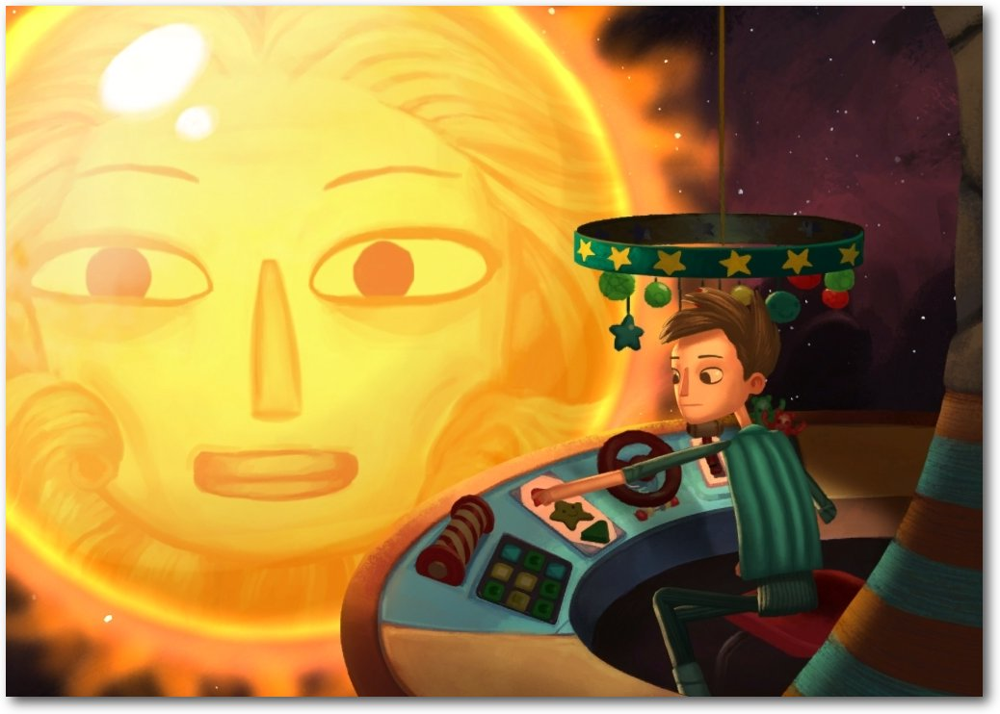Der Computer passt auf, dass sich Shay in seinem Spielzeugraumschiff nicht verfliegt.
Vellas Geschichte
Vellas Geschichte beginnt, als sie an einem wunderschönen Tag schlafend unter einem Baum liegt. Könnte sie weiterschlafen, wäre alles noch viel schöner, denn der Tag verheißt nichts Gutes. Auf dem Maidenmahl-Fest soll Vella dem Mog Chotra, einem riesigen Monster, geopfert werden. Ohne die Opferung würde der Mog Chotra Vellas Dorf angreifen und zerstören. Doch Vella hat keine Lust zu sterben. Im Gegensatz zu den anderen jungen Frauen, die ebenfalls geopfert werden sollen, sieht sie es nicht als Ehre an, getötet zu werden, sondern hinterfragt, wieso man sich nicht gegen den Mog Chatra wehrt. Und so findet Vella, kurz bevor der Mog Chatra sie fressen kann, einen Ausweg und landet in Wolkenheim, einem Ort über den Wolken. Findet sie von hier wieder einen Weg zurück, um ihr Dorf zu retten und den Mog Chatra zu besiegen?Für Vella beginnt kein guter Tag, da sie geopfert werden soll.
Die Geschichte von Broken Age
Broken Age hat im Jahr 2012 Geschichte bei Kickstarter [2] geschrieben, nachdem von den anvisierten 400.000 US-Dollar über drei Millionen US-Dollar von den Unterstützern bereitgestellt wurden. Hergestellt wurde das Spiel von Double Fine [3] und dem Entwickler Tim Schafer [4], der auch für Spiele wie Monkey Island oder Psychonauts verantwortlich zeichnete. Den Schritt, das Spiel über Kickstarter zu finanzieren, musste er notgedrungen machen, da ihm kein Publisher das Geld für ein simples Point-and-Click-Adventure geben wollte. Trotz des finanziellen Erfolges dauert es anderthalb Jahre, ehe das Spiel im Januar 2014 veröffentlicht wurde. Und weil man auch dann noch nicht komplett fertig war, entschied sich das Entwicklerstudio, das Spiel in zwei Akte zu trennen. Der zweite Akt soll Ende 2014 folgen. 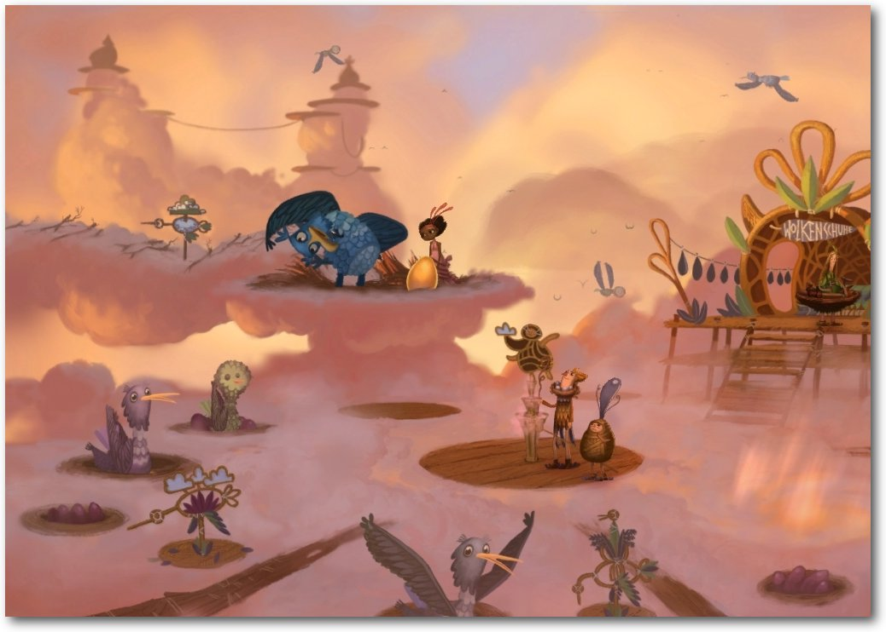Vella nach ihrer Flucht in Wolkenheim.
Etwas Technisches
Bei Broken Age handelt es sich um ein klassisches Point-and-Click-Adventure [5] [6]. Mit der Maus bewegt man sich durch die zweidimensionalen Orte, spricht mit anderen Menschen, wobei Dialogoptionen die Antworten vorgeben, sammelt hilfreiche Gegenstände ein und benutzt diese mit der Umgebung. In dieser Hinsicht bietet Broken Age keine Besonderheit. Alles funktioniert, wie man es von anderen Adventure-Spielen kennt. Eine kleine Besonderheit ist, dass man jederzeit zwischen den beiden Spielcharakteren umschalten kann, was aber natürlich auch schon bei vielen anderen Adventures zuvor möglich war. 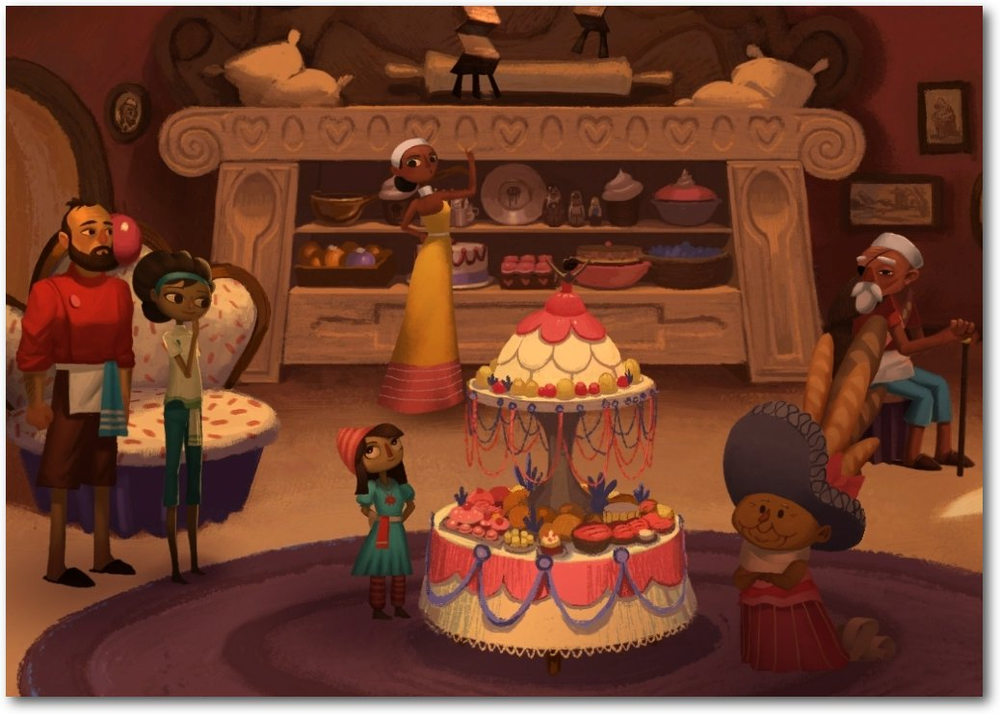Zu Vellas Opfertag gibt es eine große Feier.
Sehr schön anzusehen ist die Grafik des Spiels, die im Comic-Look gehalten ist. Auch wenn der Stil neu ist, fühlt man sich als Spieler stellenweise an andere Spiele von Double Fine erinnert, was aber nicht schlecht sein muss. Interessant zu erwähnen ist, dass alle In-Game-Grafiken auch ins Deutsche übersetzt wurden, was der Welt sehr viel Authentizität gibt. Auch die Dialogoptionen sind Deutsch, nur leider die Sprache nicht. Im Englischen hat man hierfür großartige Sprecher bzw. Schauspieler wie Masasa Moyo als Vella, Jennifer Hale als Computer, Elijah Wood als Shay und daneben auch noch Jack Black und Will Wheaton in kleineren Rollen engagieren können. Für die deutschsprachige Version war eine Übersetzung anscheinend nicht möglich. Immerhin gibt es deutsche Untertitel für alle Dialoge. 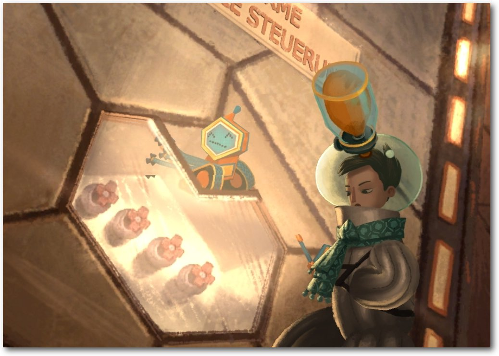
Shay verschlägt es auch in den Weltraum – mit Schal, weil es da so kalt ist.
Das Spiel wurde von Anfang an für Linux angekündigt und entwickelt, sodass es auf allen Distributionen ohne Probleme laufen sollte, auch wenn es hauptsächlich für Ubuntu spezifiziert ist. Neben der Steam-Version [7] gibt es im Humble Store [8] auch eine DRM-freie Version. Im Preis inbegriffen ist auch der zweite Akt, sobald dieser erscheint.
Fazit
Auch wenn Spiele, wie jede Art von Kunst, immer Geschmackssache sind, zeigt Tim Schafers Lebenslauf, dass er gute Spiele machen kann: Monkey Island, Grim Fandango, Psychonauts, Brütal Legend, Costume Quest (siehe freiesMagazin 08/2013 [9]) oder The Cave. Alle kamen sowohl bei der Presse als auch bei den Spielern sehr gut an und haben heute teilweise einen Kult-Status erreicht. Vor allem der Humor, den man – wenn auch in abgeschwächter Form – auch in Broken Age finden kann, zeichnet den Entwickler aus. 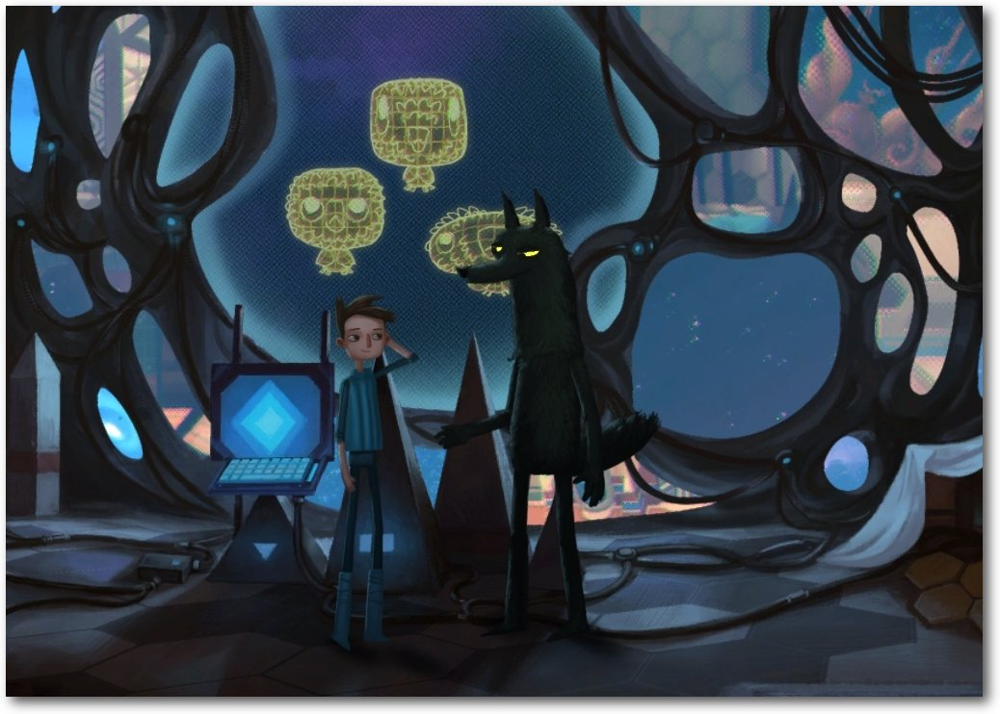Der geheimnisvolle Wolf Marrek nimmt Shay mit auf ein richtiges Abenteuer.
Spielerisch ist das Adventure sehr solide und macht nichts falsch. Die Rätsel sind auf normalen bis einfachen Level und jederzeit logisch zu lösen. Es gibt keine lange Laufwege, sodass man nicht stundenlang durch die Gegend irren muss. Hier ist Broken Age also auf normalen Niveau, auch wenn es keine Hot-Spot-Anzeige gibt, die man aber bei der Einfachheit der Rätsel auch nicht vermisst. Wo Broken Age in meinen Augen besser ist als andere Genre-Vertreter ist die Grafik, die Sprecher, die musikalische Untermalung von Peter McConnell [10] und vor allem die Story. Von Anfang an fiebert man als Spieler mit Shay und Vella mit und möchte sie aus ihrem „Gefängnis“ befreien. Das geht am Anfang noch etwas behäbig und langsam, nimmt dann aber schnell Fahrt auf. Und vor allem treibt einen die Frage an: Wie sind beide Geschichten miteinander verbunden? Die Antwort bleibt das Spiel bis fast zum Ende von Akt 1 schuldig und nur kleine Andeutungen während der Spielzeit zeigen, dass es überhaupt eine Verbindung gibt. 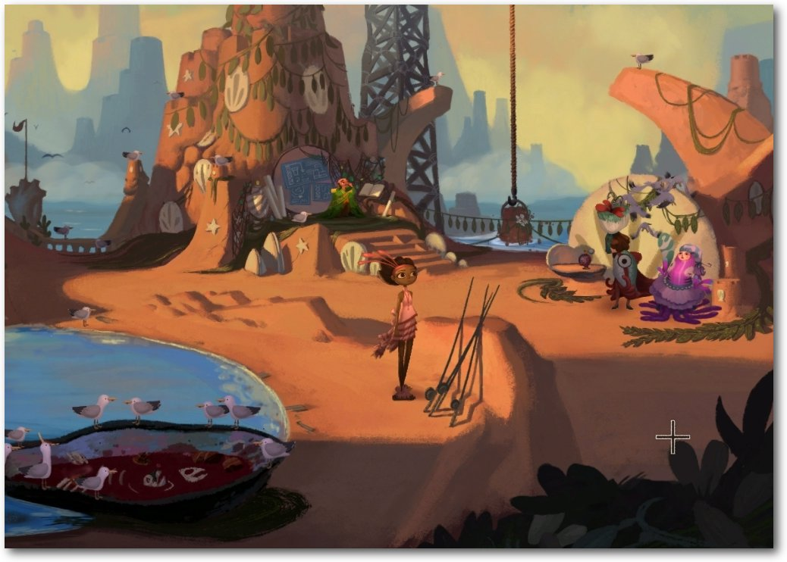
Am Strand von Muschelhöhe findet die Opferung für Mog Chatra statt.
Der Schluss von Akt 1 ist dann auch ein echter Cliffhanger und wer Broken Age spielen will, sollte vielleicht auf Akt 2 warten, um das Spiel gleich von Anfang bis Ende spielen zu können. Zu viel Zeit wird man dabei leider nicht einplanen müssen. Akt 1 war nach knapp vier Stunden bereits vorbei. Wenn Akt 2 genauso lange dauert, handelt es sich um einen sehr kurzen Vertreter des Adventure-Genres. Ob dies den aktuellen Preis von knapp 23 Euro wert ist, muss jeder selbst entscheiden. Mir hat Akt 1 von Broken Age sehr gut gefallen und ich freue mich auf den zweiten Akt, der hoffentlich demnächst herauskommt. Vor allem möchte ich wissen, wie Shays und Vellas Geschichte weitergeht. Das eigentliche Spielen des Spiels (d. h. die Mechanik) trat dabei in den Hintergrund – was für mich ein gutes und unterhaltsames Spiel auszeichnet. Links
[1] http://brokenagegame.com/
[2] https://www.kickstarter.com/projects/doublefine/double-fine-adventure
[3] http://www.doublefine.com/
[4] https://de.wikipedia.org/wiki/Tim_Schafer
[5] https://de.wikipedia.org/wiki/Point-and-Click
[6] https://de.wikipedia.org/wiki/Adventure
[7] http://store.steampowered.com/app/232790/
[8] https://www.humblebundle.com/store/p/brokenage_storefront
[9] http://www.freiesmagazin.de/freiesMagazin-2013-08
[10] http://doublefine.bandcamp.com/album/broken-age-original-soundtrack
| Autoreninformation |
| Dominik Wagenführ (Webseite) spielt sehr gerne, wenn er Zeit dazu findet. Broken Age ist eines der wenigen Spiele, das er über Crowdfunding mitfanziert hat. |
Beitrag teilen Beitrag kommentierenZum Index
Eine Einführung in Octave
von Jens Dörpinghaus Wissenschaftliches Programmieren gehört heutzutage zum Handwerkszeug der allermeisten Fächer. Spezialisierte Programme wie SPSS können einen großen Teil der Arbeit abnehmen, aber trotzdem ist es sinnvoll, mindestens Grundkenntnisse im Programmieren, etwa in Matlab oder Octave, zu besitzen. Der folgende Text soll bei den ersten Schritten behilflich sein und die Grundkenntnisse im Umgang mit Octave vermitteln. Schon in vielen weiterführenden Schulen werden heute grafikfähige Taschenrechner verwendet, deren Möglichkeiten aber weit hinter denen eines Computers mit entsprechender Software liegen. Auch didaktisch werden diese kontrovers diskutiert. Können Kenntnisse in Matlab [1] oder Octave [2] in der Schule hilfreich sein, so sind sie spätestens im Studium oder in der Fachausbildung fast unabdingbar. Nur so können Fehlerquellen erkannt werden und schon fertige Funktionen sicher verwendet werden. Es ist nicht nur bei wissenschaftlichen Arbeiten peinlich, wenn sich vermeintlich richtige Ergebnisse als falsch herausstellen. Octave ist, wie der proprietäre Platzhirsch Matlab, ein umfangreiches Programmpaket, das zur Lösung numerischer Probleme genutzt werden kann. Aufgrund der vielen möglichen Erweiterungen werden diese Programme aber auch oft für weniger direkt mathematische Anwendungsfälle genutzt. Sie können als Rundumlösungen für technisch-wissenschaftliche bis statistische Probleme gesehen werden. Dieser Artikel richtet sich primär an Octavenutzer. Da beide Programme weitestgehend kompatibel sind, kann jeder Quellcode aber auch in Matlab verwendet werden. Die grafische Benutzeroberfläche von Octave steht seit der Version 3.8.0 experimentell zur Verfügung und soll mit dem nächsten großen Versionsschritt ein regulärer Teil von Octave werden. Mit der folgenden Anleitung können die meisten Aufgaben, die täglich auftreten, gelöst werden. Wichtig ist es, die vorgeschlagenen Rechnungen nicht nur selbst auszuprobieren, sondern auch eigene Versuche zu wagen und einfach auszuprobieren.Die Oberfläche
Beim ersten Start der neueren Versionen von Octave bekommt man noch eine große Warnmeldung, dass es sich um eine experimentelle GUI handelt. Diese Meldung kann einfach ignoriert werden. 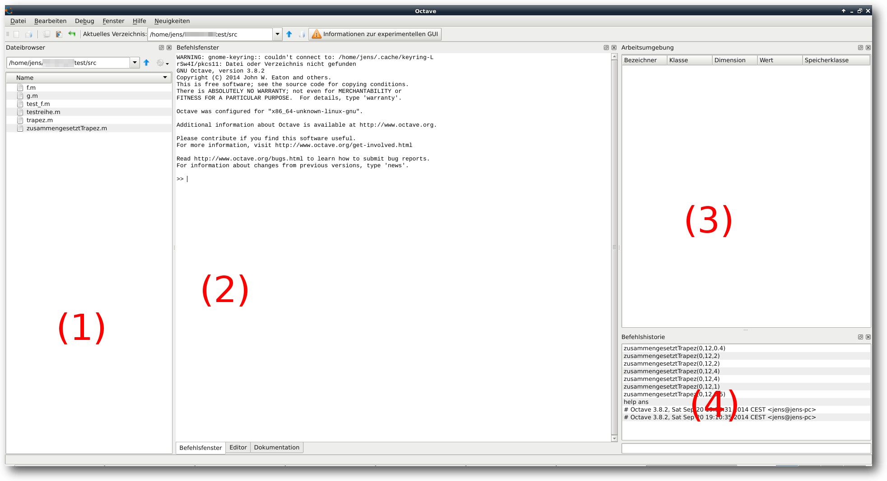Die Oberfläche von Octave mit Dateibrowser (1), Arbeitsbereich (2), Arbeitsumgebung (3) und Befehlshistorie (4).
Zusätzlich findet man folgende Bereiche vor:
- Der Dateibrowser: Hier können Skripte und andere Dateien organisiert, ausgeführt oder editiert werden.
- Der Arbeitsbereich: Die drei Bereiche – Befehlsfenster als Kommandozeile, Editor und die Dokumentation – können durch die Tableiste im unteren Bildschirmbereich ausgewählt werden.
- Die Arbeitsumgebung: Hier werden aktuelle Variablen mit ihren Werten angezeigt.
- Die Befehlshistorie: Sie enthält die letzten eingegebenen Befehle.
Der Editor mit leerer Datei.
Die Kommandozeile
Die Kommandozeile erlaubt es, Befehle in Octave auszuführen, denn man möchte ja mitteilen, was das Programm erledigen soll. Standardmäßig ist dieser Bereich nach dem Start sichtbar, man kann sie jedoch jederzeit mit einem Klick auf „Befehlsfenster“ in der unteren Tableiste öffnen. Sie meldet sich mit >> eingabebereit. Diese beiden Zeichen werden im Folgenden auch immer angegeben, wenn erwartet wird, dass etwas in die Kommandozeile eingegeben werden soll. Man kann nun verschiedene Dinge testen:>> 2+3
ans = 5
>> 9*9
ans = 81
>> 9+9*9
ans = 90
>> (9+9)*9
ans = 162
>> 9+(9*9)
ans = 90
Wie man sieht, kann man Octave in diesem Modus als Taschenrechner missbrauchen. Das
Wort ans bedeutet schlicht, dass es sich dabei um das Ergebnis der letzten
eingegebenen Rechnung handelt. Natürlich funktionieren auch trigonometrische
Funktionen wie sin, cos, tan, aber auch log, log10 und exp.
Diese sind Schlüsselwörter und dürfen nicht für andere Dinge, etwa für das
Benennen von Variablen verwendet werden. Es gibt auch Schlüsselwörter, die
keinen funktionalen Charakter haben. pi etwa ist als Schlüsselwort für Pi
reserviert:
ans = 5
>> 9*9
ans = 81
>> 9+9*9
ans = 90
>> (9+9)*9
ans = 162
>> 9+(9*9)
ans = 90
>> sin(2)
ans = 0.90930
>> sin(2*pi)
ans = -2.4493e-16
Zum einen rechnet Octave
standardmäßig mit dem Bogenmaß, zum anderen ist
ans = 0.90930
>> sin(2*pi)
ans = -2.4493e-16
|
|
>> 3^2
ans = 9
>> sqrt(9)
ans = 3
Variablen sind mehr oder weniger beliebig benannte Speicher für Werte. Man
schreibt dazu zunächst den Namen und nach einem Gleichheitszeichen den Wert, den
man der Variable zuweist. Diesen kann man jederzeit ändern. Man darf dieses
Gleichheitszeichen nicht in einem mathematischen Sinn missverstehen, es handelt
sich eher um ein Zuweisungszeichen.
ans = 9
>> sqrt(9)
ans = 3
>> x = 2
x = 2
>> x + 6
ans = 8
>> x = 4
x = 4
>> x + 6
ans = 10
Man kann in jeder bisher eingegebenen Zeile sehen, dass Octave jede Eingabe
bestätigt (x = 2) oder das Ergebnis ausgibt (ans = ...). Möchte man das nicht,
z. B. in einem Skript, schließt man die Zeile einfach mit einem Semikolon ab:
x = 2
>> x + 6
ans = 8
>> x = 4
x = 4
>> x + 6
ans = 10
>> x=3;
>> x+4
ans = 7
Im Übrigen kann man jederzeit den Wert einer Variable rechts in der
Arbeitsumgebung sehen oder mit disp ausgeben lassen:
>> x+4
ans = 7
>> disp(x)
3
3
Pakete installieren
Von Matlab kennt man den Begriff der „Toolbox“, der sich primär auf optionale, oft sehr kostenintensive Erweiterungen von Mathworks selber bezieht. Der Begriff wurde aber auch auf weitere, teils freie Erweiterungen wie die „Psychophysics-Toolbox“ übertragen. Unter Octave werden solche Erweiterungen als „Package“ bezeichnet und stehen reichlich zur Verfügung. Solche Erweiterungen sind dann nützlich, wenn der Umfang der Standardumgebung nicht mehr ausreicht oder spezielle Funktionen, etwa aus der Statistik oder der Signalverarbeitung, benötigt werden. Die Installation erfolgt in Matlab in aller Regel über ein Installationsprogramm (Toolboxen von Mathwork) oder durch simples Entpacken und Hinzufügen zu den Pfaddefinitionen. Letzteres funktioniert unter Octave auch, allerdings gibt es einen wesentlich komfortableren Weg Erweiterungen zu installieren, denn Octave besitzt ein komplettes „package system“. Dieses funktioniert ganz ähnlich wie in der Statistiksoftware R, kann einfach auf der Kommandozeile aufgerufen werden und bezieht – zumindest bei den Paketen, die in Octave-Forge [3] vorhanden sind – die Daten automatisch. Hat man ein Paket aus anderen Quellen, beispielsweise als tar.gz-Archiv, so kann man es mithilfe des Befehls>> pkg install archiv.tar.gz
installieren. Mit pkg list lässt man sich alle installierten Pakete anzeigen.
Für Pakete aus Octave-Forge müssen die Dateien nicht manuell heruntergeladen werden. So
vereinfacht sich der Installationsprozess für das Paket control
beispielsweise wie folgt:
>> pkg install -forge control
For information about changes from previous versions of the control package, run 'news control'.
>> pkg list
Package Name | Version | Installation directory
--------------+---------+---------------
control *| 2.6.5 | /home/jens/octave/control-2.6.5
Nicht für alle Toolboxen stehen unter Octave gleichwertige Packages zur
Verfügung. Als Beispiel sei zum einen die „Signal-Processing-Toolbox“ genannt,
deren Äquivalent, dem „Signal-Package“, einige Funktionen fehlen, und zum anderen
die „Curve-Fitting-Toolbox“, die in der Octave-Welt völlig fehlt. Inwieweit die
fehlenden Funktionen relevant sind bzw. etwaige Inkompatibilitäten wichtig sind,
muss im Einzelfall geprüft werden.
LinksFor information about changes from previous versions of the control package, run 'news control'.
>> pkg list
Package Name | Version | Installation directory
--------------+---------+---------------
control *| 2.6.5 | /home/jens/octave/control-2.6.5
[1] http://www.mathworks.co.uk/products/matlab/
[2] https://www.gnu.org/software/octave/
[3] http://octave.sourceforge.net/
| Autoreninformation |
| Jens Dörpinghaus arbeitet seit vielen Jahren mit Matlab und Octave. Da er privat ausschließlich freie Software einsetzt, verfolgt er die Entwicklung von Octave gespannt. |
Beitrag teilen Beitrag kommentierenZum Index
Ubucon 2014 in Katlenburg-Lindau
von Vicki Ebeling und Sujeevan Vijayakumaran In diesem Jahr fand die Ubucon zum achten Mal statt. In den letzten Jahren wurde die sie in Krefeld, Göttingen, Leipzig, Berlin und Heidelberg veranstaltet. Erstmals war der Tagungsort keine größere Stadt; stattdessen ging es an eine Grundschule in der Gemeinde Katlenburg-Lindau [1]. 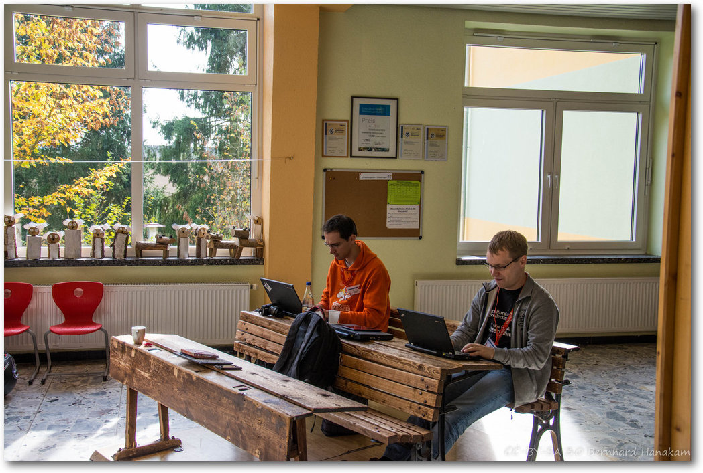In der Grundschule konnten sich Besucher auf eine traditionelle Schulbank setzen.
© Bernhard Hanakam (CC-BY-SA-4.0) © Bernhard Hanakam (CC-BY-SA-4.0)
10 Jahre Ubuntu, 10 Jahre Community
Die Ubucon ist das jährliche Treffen der deutschen Ubuntu-Community. Ubuntu existiert seit nunmehr 10 Jahren. Deshalb lautete das Motto der Ubucon 2014 „10 Jahre Ubuntu, 10 Jahre Community“. Das Motto war zudem auch der Auftaktvortrag, der von Torsten Franz am Freitag gehalten wurde. Das Vortragsprogramm war dieses Mal etwas schmaler als die vergangenen Jahre, sodass es insgesamt bis zu vier parallele Vorträge gab. Insgesamt waren 8 Workshops und 15 Vorträge angekündigt, wovon jeweils einer leider kurzfristig ausgefallen ist. Obwohl die Teilnehmeranzahl im Vergleich zum Vorjahr etwas gesunken ist, war die Veranstaltung mit etwa 100 Teilnehmern dennoch gut besucht. Unter den Angemeldeten befanden sich ca. 93% männliche und 7% weibliche Besucher.Die Vorträge waren gut besucht.
© Bernhard Hanakam (CC-BY-SA-4.0) © Bernhard Hanakam (CC-BY-SA-4.0)
Verschlüsselung ist besonders nach den Enthüllungen von Edward Snowden für viele Personen interessanter geworden. Ein Themenschwerpunkt lag auf diesem Thema, sodass es eine größere Anzahl an Vorträgen und Workshops diesbezüglich gab. Olaf Bialas hielt zunächst ein Vortrag über die Nutzung von Verschlüsselungen und digitalen Signaturen. Kurz danach erzählte Sven Guckes über selbiges Thema, allerdings mit dem Schwerpunkt auf den E-Mail-Client mutt. Weitere Themen waren etwa die Zwei-Faktor-Authentisierung bei LUKS und die Nutzung von ownCloud für das eigenständige Hosten von Dateien und Dokumenten. Neben diesen Vorträgen gab es noch einige Workshops, etwa über Git, Blender oder OpenStack.
Der Veranstaltungsort
In Katlenburg erwarteten die Besucher in Nachbarschaft zur betagten Burg moderne Tagungsräume, deren Ausstattung einer Hochschule ebenbürtig war. Der Internet- und Linuxverein „Netzwelt Katlenburg-Lindau e.V.” [2], der Ausrichter der diesjährigen Ubucon, stellte über die für die Vorträge benötigte Infrastruktur hinaus einige Extras bereit. So konnten etwa in der Spiele-Lounge Neuentwicklungen für Linux-kompatible Rollenspiele getestet und Tischkicker gespielt werden. Im Foyer bestand die Möglichkeit, verschiedene Linux-Distributionen und Desktop-Umgebungen auszuprobieren und zu vergleichen. Dort konnte man auch fachsimpeln und diskutieren. 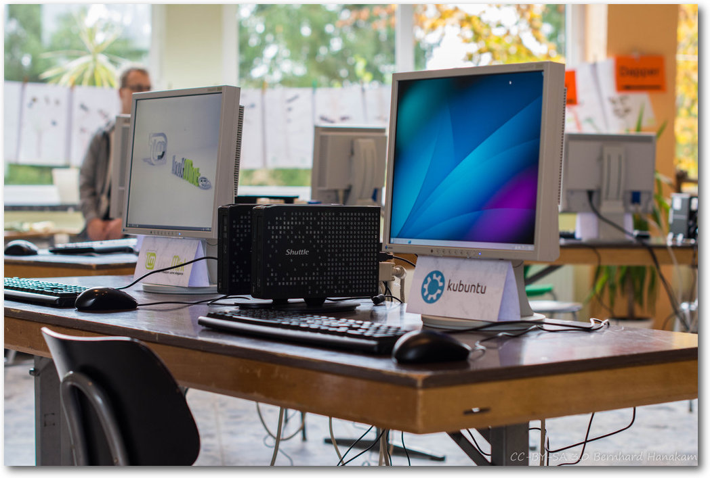Im „Distributionskreis“ standen einige Distributionen und Desktop-Umgebungen zum Testen bereit.
© Bernhard Hanakam (CC-BY-SA-4.0) © Bernhard Hanakam (CC-BY-SA-4.0)
Für das leibliche Wohl sorgte ein hochmotiviertes Küchenteam, das in Kooperation mit lokalen Firmen verschiedene Suppen, belegte Brötchen und Würstchen auf den Tisch brachte. Kommende Veranstaltungsorte werden sich an diesem herzlichen Service messen lassen müssen. 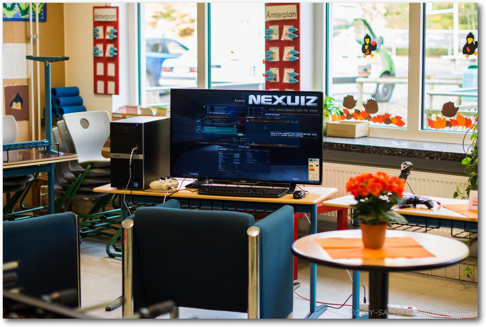
Ein Blick in die Spieleecke.
© Bernhard Hanakam (CC-BY-SA-4.0) © Bernhard Hanakam (CC-BY-SA-4.0)
Social Events
Traditionell finden auf der Ubucon außer Fachveranstaltungen auch immer Social Events statt. Den Anfang machte diesmal am Freitagabend das Ritteressen auf der Katlenburg. Hier wurde den zahlfreudigen Gästen in historischem Ambiente eine rustikale Fleischmahlzeit gereicht und auch an kühlen Getränken mangelte es nicht. Das Rahmenprogramm gestalteten zwei bemühte Mitglieder des Feuervarieté Cedrus Inflamnia [3], die bei der abschließenden Feuershow sogar einen mutigen Teilnehmer zum Spiel mit dem Feuer brachten. Am Samstagabend wurden zwei kulturelle Höhepunkte geboten. Während am Tagungsort Livemusik mit alten und neuen Hits erklang, besuchte eine Gruppe Teilnehmer eine Sonderführung durch das Theater der Nacht in Northeim [4]. Besitzer Heiko Brockhausen, der Ubuntu bei der Lichtgestaltung einsetzt, ließ die interessierten Besucher hinter die Kulissen des Puppentheaters schauen und beschrieb den eindrucksvollen Umbau des Gebäudes.Ausblick und Planung
Schon jetzt läuft die Planung für die nächste Ubucon im Herbst 2015. Wer sich vorstellen kann, diesem sympathische Event in seiner Nähe Räumlichkeiten zur Verfügung zu stellen, findet die Rahmenbedingungen auf der Ubucon-Webseite [5]. Links[1] http://www.burgbergschule-kali.de/
[2] http://www.netzwelt-kali.de/
[3] http://feuervariete.de/
[4] http://www.theater-der-nacht.de/
[5] http://ubucon.de/2014/call-for-places-veranstaltungsort-fuer-die-ubucon-2015-gesucht
| Autoreninformation |
| Vicki Ebeling und Sujeevan Vijayakumaran nehmen seit mehreren Jahren an der Ubucon teil. Bernhard Hanakam konservierte bei seinem ersten Ubucon-Besuch zahlreiche Erinnerungen fotografisch. |
Beitrag teilen Beitrag kommentierenZum Index
Interview mit den Musikpiraten
von Dominik Wagenführ Wer das Wort „Musikpiraten“ hört, denkt vermutlich zuerst an den illegalen Tausch von Liedern in diversen Tauschbörsen. Dass der Musikpiraten e.V. nicht viel weiter am anderen Ende des rechtlichen Spektrums stehen kann, zeigt das E-Mail-Interview mit Christian Hufgard, dem Vorsitzenden des gemeinnützigen Vereins.Christian Hufgard, Vorsitzender des Musikpiraten e.V.
© Christian Hufgard (CC-BY-SA-4.0) © Christian Hufgard (CC-BY-SA-4.0)
-> Hallo Christian. Vielen Dank, dass Du für ein Interview zur Verfügung stehst. Ich denke, für den Start es ist sinnvoll, wenn Du den Musikpiraten e.V. [1] kurz vorstellst? Seit wann existiert der Verein und was ist seine Aufgabe? <- Die Musikpiraten wurden Juni 2009 gegründet. Wir haben als Vereinsziel die Förderung der Kultur und zwar besonders der freien Musik. Dafür wurden wir vom Finanzamt auch als gemeinnützig anerkannt. -> Was genau wird denn alles unter so einer Förderung zusammengefasst? <- Wir veranstalten zum Beispiel den Free!Music!Contest und unterstützen Musiker oder Bands gelegentlich auch direkt finanziell mit Geld für Instrumente. -> Was hat Dich/Euch dazu bewogen, den Verein zu gründen? <- Die Gründung geht zurück ins Jahr 2008. Da habe ich bei der hessischen Piratenpartei vom OpenMusicContest [2] erfahren. Ich fand das Konzept klasse und als Landesverband wollten wir den Wettbewerb unterstützen. Leider wurde das von den Machern abgelehnt, da man dort mit Parteien nichts zu tun haben wollte. Also haben wir beschlossen, einen Verein zu gründen, der dann den Wettbewerb unterstützt – und etwas mit „Piraten“ im Namen hat. Leider fand dann ab 2009 der OpenMusicContest nicht mehr statt, weshalb wir den Free!Music!Contest [3] ins Leben gerufen haben. -> Der Name „Musikpiraten“ könnte in der Gemeinschaft negativ aufgefasst werden, weil er doch sehr an Musikpiraterie erinnert. War die Namenswahl Absicht, z. B. als bewusste Provokation, oder hat sich das einfach so ergeben? <- Der Begriff der „Musikpiraterie“ ist ein Kampfbegriff der Musikindustrie. Damit soll suggeriert werden, der Konsum von Musik, ohne für jeden einzelnen Hör- und Kopiervorgang zu zahlen, wäre illegal. Das ist jedoch falsch, denn das private Kopieren und Teilen von Musik ist zulässig. Die Urheber erhalten dafür eine Entschädigung, die in Form von Pauschalabgaben von der SD-Karte bis hin zum Handy erhoben wird. Wir wollten mit dem Namen aber auch klar eine Nähe zur Piratenpartei zeigen. -> Es gab sicherlich vieles, was Ihr erreichen wolltet. Habt Ihr davon etwas erreicht? Hat sich die heutige Tätigkeit gegenüber den Anfängen geändert? <- Ich denke, wir haben vielen Menschen das Konzept frei verfügbarer Kunst näher gebracht. Unser größter Erfolg war aber die Produktion von über 50.000 Liederbüchern mit GEMA-freien Kinderliedern [4]. Das ging bundesweit durch die Presse und hat sehr viele Menschen gezeigt, dass es jenseits der GEMA [5] noch Alternativen gibt.
Logo des Musikpiraten e.V.
© Gemeinfrei (CC0 1.0) © Gemeinfrei (CC0 1.0)
-> Wie ist die Resonanz auf den Musikpiraten e.V. in den Medien abseits der „Szene“? Werdet Ihr dort überhaupt wahrgenommen? <- Vor allem durch die eben schon erwähnten Liederbücher sind wir ziemlich bekannt geworden. Mein Kopf war sogar auf Seite 1 der BILD zu sehen. Unsere Auseinandersetzungen mit der GEMA schaffen es auch immer wieder in die klassische Presse. Von der BILD über heise.de bis hin zum österreichischen derStandard.at waren wir bereits in diversen Medien vertreten. Auch in Fachblogs zum Thema Erziehung und in Lehrerrundbriefen nahm man uns zur Kenntnis. -> Was hat Euch dazu bewogen, Projekte wie „Kinder wollen singen“ zu starten? <- Die Arroganz der GEMA [5] und der VG Musikedition [6] und natürlich der Wunsch, die Menschen über ihre Rechte aufzuklären. Wir konnten es einfach nicht ertragen, dass sich die GEMA hinstellt und behauptet, niemand dürfe Noten kopieren, ohne ihnen dafür Geld zu zahlen. -> Apropos GEMA, wer Eure Aktivitäten verfolgt, kennt die Probleme. Kannst Du es für alle anderen kurz beschreiben? <- Puh, kurz ist schwierig … Laut Rechtsprechung aus dem letzten Jahrtausend gehören der GEMA die Rechte an aller Musik weltweit (GEMA-Vermutung [7]). Wenn man dann eine CD erstellen oder Musik öffentlich aufführen will, muss man der GEMA beweisen, dass sie an dem Werk keine Rechte hält. Das ist im Creative-Commons-Umfeld oft schwierig, da die Urheber nicht wollen, dass ihre bürgerlichen Namen bekannt werden. Aber selbst wenn man die hat, muss man häufig noch das Geburtsdatum und den aktuellen Wohnort nennen – denn es gibt diverse Christian Müller und Markus Schmitt, die GEMA-Mitglied sind. Leider hat es das Landgericht Frankfurt 2013 abgelehnt, die Angelegenheit vom Bundesgerichtshof entscheiden zu lassen [8]. Jetzt müssen wir auf die nächste Klage durch die GEMA warten. -> Gibt es denn keine Alternative zur GEMA? <- Es gab schon diverse Versuche, andere Verwertungsgesellschaften aufzubauen. Zur Zeit befindet sich die C3S (Cultural Commons Collection Society [9]) auf einem recht guten Weg. In Zukunft muss man sich als Nutzer freier Werke dann halt mit GEMA oder C3S rumstreiten. Eine wirkliche Lösung ist das nicht. :( -> Das klingt sehr negativ. Welche Möglichkeiten einer Verwertung würdest Du Dir denn wünschen? <- Ich wünsche mir eine Abschaffung der GEMA- bzw. Verwertungsgesellschaftsvermutung. Wenn ein Musiker seinen Namen nicht nennen will, finde ich es absolut unangemessen, dass dann für die Nutzungs seines Werkes Geld an eine Verwertungsgesellschaft gezahlt werden muss. -> Gibt es auf europäischer oder weltweiter Ebene ähnliche Probleme? Gibt es denn in anderen Ländern andere Vereine wie Euch, die Freie Musik unterstützen? <- Bestimmt, aber mit ist keiner bekannt. -> Bei der Sammlung nach Fragen für das Interview in meinem Umfeld kam öfters die Frage auf, was für Musik Ihr veröffentlicht, obwohl Ihr ja gar keine selbst veröffentlicht, sondern nur auf freie Musik hinweist. Hast Du eine Idee, wie man diesen Irrtum aus den Köpfen bekommt? <- Der Begriff des „Veröffentlichens“ ist da ein sehr unscharfer. Wir sammeln immer wieder Lieder und packen sie dann in Samplern zusammen. Vermutlich werden wir aber aufgrund des Namens als ein Warez-Verein oder etwas Ähnliches angesehen. -> Stimmt, genau genommen veröffentlicht Ihr mit dem Free!Music!Contest-Sampler doch jedes Jahr Musik. Kannst Du etwas zu dem Wettbewerb erzählen? <- Es reichen Künstler aus der ganzen Welt Lieder bei uns ein. Wir werden dabei von Creative Commons [10] unterstützt und wurden sogar dieses Jahr für den Zedler-Preis der Wikimedia Deutschland vorgeschlagen [11]. Die Künstler freuen sich immer wahnsinnig, wenn sie dann am Ende auf dem Sampler sind – und nehmen es in der Regel auch gelassen zur Kenntnis, wenn sie es nicht gepackt haben. :o) -> Wie war die Resonanz sowohl bei den teilnehmenden Künstlern als auch bei den abstimmenden Zuhörern dieses Jahr? <- Auf der Teilnehmerseite war die Beteiligung wieder sehr hoch. 69 Titel verschiedener Künstler aus verschiedenen Musikrichtungen wie Pop, Rock, Elektro, Punk oder Ska wurden eingereicht. Davon schafft es aber nur die Hälfte auf den Doppel-CD-Sampler. Das Publikumsvoting dieses Jahr lief dagegen nicht so gut, wie wir das erhofft haben. Es haben nicht einmal 20 Personen abgestimmt. :( -> Von wie vielen möglichen Abstimmern? Und ist das nicht dennoch ein Erfolg, dass Ihr auch Stimmen aus der Community erhaltet und nicht alleine als Jury entscheiden müsst? <- Es haben 16 von 24 Leuten abgestimmt. Davon waren auch einige Teilnehmer des Wettbewerbs. Insofern würde ich da nicht unbedingt von Stimmen aus der Community sprechen. -> Die meiste Musik, auf die Ihr hinweist und die Ihr unterstützt, unterliegt einer Creative-Commons-Lizenz [10]. Was ist der Grund dafür? Macht Ihr Ausnahmen? <- Das ergibt sich aus unserem Vereinsziel, freie Kultur zu fördern. Es gibt zwar auch noch andere Lizenzen neben der Creative-Commons-Lizenz für freie Kunst, aber die führen eher ein Nischendasein. Es gibt aber auch immer wieder Ausnahmen. Wichtiger als die Lizenz ist für uns, dass ein Werk für alle kostenlos verfügbar ist. Wir verlinken auch immer wieder Videos von YouTube und Vimeo, die von den Urhebern dort eingestellt worden sind. -> Beteiligen sich auch „große“ Künstler an solchen Aktionen? Oder kennt Ihr bekannte Künstler bekannt, die Freie Musik veröffentlichen? <- Die „großen“ Künstler sind leider immer bei Labels unter Vertrag, die nichts von freier Verfügbarkeit der Werke halten. Selbst die, die eigene Labels besitzen, gehen davon aus, dass jeder einzelne Download ein Cent weniger in ihrem Geldbeutel sei. Eine Ausnahmen wäre vielleicht Trent Reznor [12] von Nine Inch Nails [13]. Aber der ist auch nicht unbedingt ein Charts-Stürmer. Ich kenne einige Künstler, die von Musik leben können, die frei verfügbar ist. Aber die führen bei weitem kein Luxusleben. -> Gab es denn schon einmal Gegenstimmen zu den Musikpiraten? Vielleicht von großen Bands, die Angst um Ihre Existenz haben? <- Die ignorieren uns vollständig. Wir sind da aber auch ein viel zu kleines Rädchen. -> Hast Du Tipps parat, wie professionelle Künstler Geld mit ihrer Musik verdienen können, obwohl (oder vielleicht gerade weil) Ihre Musik frei verfügbar ist? <- Wer Profi ist, hat ja bereits schon einen Weg gefunden. Gäbe es hier ein Patentrezept, würde ich es umsetzen. :) Es hängt aber auch immer davon ab, was Musiker wollen. Was nur den wenigsten gelingt, ist rein vom Verkauf von Tonträgern – oder digitalen Kopien – zu leben. Dafür ist die Marge viel zu gering und der Markt viel zu groß. Selbst die Bands, die in den Charts hoch und runter gedudelt werden, haben weitere Jobs. Ein kurzer Blick in die Wikipedia-Artikel der aktuellen Top 10 zeigt, dass praktisch alle neben der Musik noch weitere Standbeine haben. Das sind eigene Labels, Schauspielerei oder Arbeiten als Produzent. -> Gibt es neben den Liederbüchern für Kinder und dem Free!Music!Contest noch weitere Projekte, für die der Musikpiraten e.V. bekannt ist? Vor allem, jetzt wo Weihnachten vor der Tür steht? <- Unser Creative-Christmas-Adventskalender (Beispiel von 2010 [14]) erfreut sich auch immer wieder großer Beliebtheit. Dort gibt es jeden Tag einen anderen weihnachtlichen Song, der unter einer Creative-Commons-Lizenz steht. Er kann auch ganz einfach auf eigenen Webseiten eingebunden werden. -> Zuletzt bleibt natürlich die Frage, wie man bei den Musikpiraten mitmachen kann. Wie kann sich jeder einbringen oder Euch unterstützen? <- Wir freuen uns immer über Leute, die Artikel für unsere Webseite [1] schreiben und so zeigen, was es alles an freier Kunst gibt. Aber auch Mitgliedsbeiträge sind gerne gesehen [15]. :o) -> Darfst Du sagen, wie groß der Verein aktuell ist, also wie Mitglieder er hält? Und hast Du einen Prozentzahl bereit, wie viele davon aktiv mitmachen? <- Es sind auf dem Papier knapp fünfzig Mitglieder. Aber an der letzten Mitgliederversammlung nahmen weniger als 10 davon teil. Und das, obwohl sie online durchgeführt worden ist. -> Vielen Dank für Deine Antworten, Christian. Ich wünsche dem Musikpiraten e.V. viel Erfolg auf seinem weiteren Weg und hoffe, dass Ihr vielleicht durch das Interview noch mehr Resonanz aus der Gemeinschaft erfahrt. Links
[1] http://musik.klarmachen-zum-aendern.de/
[2] http://www.openmusiccontest.org/
[3] http://musik.klarmachen-zum-aendern.de/free-music-contest-2014
[4] http://musik.klarmachen-zum-aendern.de/kinder-wollen-singen
[5] https://de.wikipedia.org/wiki/GEMA
[6] https://de.wikipedia.org/wiki/VG_Musikedition
[7] https://de.wikipedia.org/wiki/GEMA-Vermutung
[8] http://musik.klarmachen-zum-aendern.de/pressemitteilung/2013/09/06/gema_vs_musikpiraten_berufung_abgewiesen_musikpiraten_müssen_zahlen_upda
[9] https://www.c3s.cc/
[10] http://de.creativecommons.org/
[11] https://de.wikipedia.org/wiki/Wikipedia:Zedler-Preis/2014_Kategorie_III
[12] https://de.wikipedia.org/wiki/Trent_Reznor
[13] https://de.wikipedia.org/wiki/Nine_Inch_Nails
[14] http://musik.klarmachen-zum-aendern.de/creative-commons-adventskalenderadventskalender-2010-589
[15] http://musik.klarmachen-zum-aendern.de/content/musikpiraten
| Autoreninformation |
| Dominik Wagenführ (Webseite) unterstützt den Free!Music!Contest seit 2010 und holt sich bei den Musikpiraten immer wieder Anreize für neue Künstler, die Musik unter Creative-Commons-Lizenz veröffentlichen. |
Beitrag teilen Beitrag kommentierenZum Index
Rezension: Schrödinger lernt HTML5, CSS3 und JavaScript
von Maren Hachmann Das Buch „Schrödinger lernt HTML5, CSS3 und JavaScript“ [1] vermittelt auf 826 bunten Seiten das nötige aktuelle Grundwissen für zukünftige Webentwickler. Gemeinsam mit dem von seinem anspruchsvollen Chef geplagten Schrödinger erarbeitet sich der Leser Schritt für Schritt die Grundlagen von HTML5, CSS3 und JavaScript.Aufmachung
Die Bücher der „Schrödinger“-Reihe zeichnen sich durch einen lockeren und freundlichen Schreibstil aus. So besteht auch dieses Buch aus einem durchgehenden Dialog zwischen Schrödinger, dem frischgebackenen Webmaster der Firma „Stapelfix“, und seinem namenlosen Freund, der ihm schrittweise und mit vielen kleinen Hilfestellungen und wertvollen Tipps zu jeder Menge Wissen und einem zufriedenen Chef verhilft. Passend zum Namen des Buches spielen Katzen [2] häufig eine Hauptrolle in den Codebeispielen. Alle Seiten sind durchgehend farbig bebildert. Dabei erleichtern dem Leser wiederkehrende Symbole die Orientierung. Comiczeichnungen und teils großflächige Hintergrundbilder machen das Buch zu einem graphischen Gesamtkunstwerk. Das Buch bedient sich in humorvoller Weise vieler Klischees aus der Welt der „Nerds“, von Kaffee über ungesunde Ernährung bis zu World of Warcraft ist alles mit dabei. Feministen mögen sich an der Reduzierung der Interessengebiete von Schrödingers Freundin auf „Schuhe“ und „Kochen“ ein wenig stören – sie stellen jedoch immerhin einen leicht nachzuvollziehenden Hintergrund für einige Beispielaufgaben.Inhalt und Zubehör
Die Gliederung der meisten der insgesamt 18 Buchkapitel ähnelt sich. Zunächst stellt sich eine neue Aufgabe, meist kommt diese entweder von Schrödingers Arbeitgeber oder von seiner Freundin. Dann werden erst einmal einige Grundlagen erklärt und schließlich folgen unter weiteren Erklärungen zunächst einfache und dann zunehmend schwierigere Arbeitsaufgaben, die jedoch immer mit einer klaren Aufgabenstellung und einer umfangreichen, gut kommentierten Lösung versehen sind. Zum Schluss des Kapitels gibt es eine Belohnung – meist in Form eines mehr oder weniger gesunden Lebensmittels. So werden nach und nach alle grundlegenden Themenbereiche des Webdesigns abgedeckt. Es beginnt mit einem Kapitel über einfaches HTML-Markup. Ab Kapitel 3 werden dann CSS-Eigenschaften und -Animationen, Formulare, CSS-Tricks und Hinweise zur Barrierefreiheit erarbeitet. Ab Kapitel 10 geht es um JavaScript: Die Themen erstrecken sich von einer Einführung in die Syntax über Eventhandler und das Navigieren durch den Dokumentenbaum bis hin zur Nutzung von Cookies, WebStorage, der FileAPI, von Multimediaelementen und Ajax. Schließlich werden auch die Grundlagen für das Verständnis von weitergehenden Funktionen wie Geolokalisierung und responsives Webdesign gelegt. Zwischendrin gibt es aber auch immer wieder Hintergrundinformationen über das Internet, die Funktion von Webservern und zur historischen Entwicklung vieler der angesprochenen Themen. Sehr hilfreich ist die kurze Anmerkung „Funktioniert in:“ zu nahezu jeder beschriebenen CSS-, HTML- oder JavaScript-Eigenschaft, bei der auf die unterschiedliche Browserunterstützung Bezug genommen wird. Auch Tricks zur Umgehung der Schwächen einzelner Browser fehlen nicht. Die Aufgaben sind durchweg interessant und lustig gestaltet. So baut der Leser unter anderem eine Plattensammlung, ein Raumschiff, das sich mit JavaScript und Tastatureingaben steuern lässt, und ein Ajax-Spiel, das Befehle vom spanischen König entgegennimmt. Am Ende des Buches findet sich ein Anhang mit Zeichencodes für die Interpretation von Tastatureingaben mit JavaScript. Weiterhin gibt es dort noch eine kurze Einführung in reguläre Ausdrücke und ein Stichwortverzeichnis. Eine kurze JavaScript-Funktionsreferenz oder ein tabellarischer Überblick über CSS- und HTML-Eigenschaften fehlen leider – diese lassen sich jedoch auch ohne große Schwierigkeiten im Internet nachschlagen. Zusätzlich zum Buch erhält der Leser einen Zugangscode. Dieser ermöglicht nach einer Registrierung auf der Webseite des Verlags das Herunterladen einer Archivdatei mit dem vorkonfigurierten XAMPP-Webserver (je für Mac OS X, Windows und Linux) und einer umfangreichen, nach Kapiteln geordneten Beispielbibliothek.Zielgruppe
Das Buch eignet sich sehr gut für absolute Neueinsteiger, aber ebenso für Leute, die schon über ein gewisses Basis-Vorwissen verfügen. Der Leser sollte sich nicht am lockeren Stil stören und keine Schwierigkeiten mit der Fülle an Hintergrundbildern haben, die vielleicht den einen oder anderen zu stark ablenken. Zum Nachschlagen ist es wegen seines Aufbaus eher ungeeignet, denn es ist als Arbeitsbuch zum sequentiellen Durcharbeiten des Stoffes konzipiert – wobei die Aufgaben meist nicht aufeinander aufbauen, so dass der Leser ihm Bekanntes auch überspringen kann.Fazit
Für Anfänger lohnt sich dieses motivierend geschriebene Buch auf jeden Fall. Einige kleinere Fehler (und wenige echte „Schnitzer“) sind bei einem so umfangreichen Werk verzeihlich. Der Leser wird sich nach dem Durcharbeiten sicher gerne an seine gemeinsamen Wochen mit Schrödinger, Bossingen und den vielen Katzen erinnern.| Buchinformationen | |
| Titel | Schrödinger lernt HTML5, CSS3 und JavaScript – Das etwas andere Fachbuch [1] |
| Autor | Kai Günster |
| Verlag | Galileo Press, 1. Auflage 2013, 1. korrigierter Nachdruck 2014 |
| Umfang | 826 Seiten |
| ISBN | 978-3-8362-2020-0 |
| Preis | 44,90 € (broschiert), 39,90 € (E-Book) |
Links
[1] https://www.galileo-press.de/schrodinger-lernt-html5-css3-und-javascript_3277/
[2] https://de.wikipedia.org/wiki/Schrödingers_Katze
| Autoreninformation |
| Maren Hachmann freut sich sehr darüber, dieses Buch beim Icon-Wettbewerb von freiesMagazin gewonnen zu haben. |
Beitrag teilen Beitrag kommentierenZum Index
Rezension: Java – Eine Einführung in die Programmierung
von Christian Schnell Mit ihrem Buch Buch „Java – Eine Einführung in die Programmierung“ [1] ermöglichen die bekannten Fachbuch-Autoren Dirk Louis und Peter Müller Anfängern einen guten Einstieg in die Programmiersprache Java. Redaktioneller Hinweis: Wir danken Hanser für die Bereitstellung eines Rezensionsexemplares.Zum Inhalt
Der Schwerpunkt des ersten Kapitels liegt auf der Installation von Java und der Klärung von einigen grundsätzlichen Aspekten von Programmiersprachen im Allgemeinen und Java (auch im Vergleich zu C) im Besonderen. Was ist eine Compiler-Sprache, was ist eine Interpreter-Sprache und wo reiht sich hier Java ein? Der übliche geschichtliche Überblick wird hier sehr kurz gehalten und die Autoren gehen schnell zum Thema Installation des Java SE Development Kit über und klären den grundsätzlichen Ablauf beim Java-Programmieren. Dabei werden auch Gründe dafür geliefert, warum sich der Anfänger lieber mit einem Texteditor und der Konsole begnügt und erst später auf eine integrierte Entwicklungsumgebung umsteigen sollte. Neulingen an der Konsole werden die wichtigsten Befehle aufgelistet, sodass sie hier auch nicht abgeschreckt werden. Im zweiten Kapitel wird das obligatorische HalloWelt-Programm erstellt und das Grundgerüst einer Java-Anwendung erklärt. Auch hier sind die Angaben gut nachvollziehbar, einzig die Anleitungen zum Setzen der Umgebungsvariablen dürften für Anfänger wenig hilfreich sein. Abgerundet wird das Kapitel von zwei einfachen Übungsaufgaben. In Kapitel drei geht es dann ans Eingemachte: Variablen, Datentypen, Operatoren und Typumwandlungen werden hier genauso behandelt wie Objekte und Klassen. Die Einführung in die Objektorientierung erfolgt verständlich und wird von den gebrachten Beispielen gut unterstützt. Wie auch bei den anderen Kapiteln wird dieses von einem Frage-und-Antwort-Teil am Ende begleitet, bei dem verschiedene Aspekte aus dem vorangegangen Teil noch einmal abgefragt und vertieft werden. Die Antworten finden sich jedoch direkt unter den Fragen, sodass man beim Selbsttest aufpassen muss, nicht unfreiwillig zu „schummeln“. Nach diesem ersten Einstieg in die Objektorientierung wird das Thema in Kapitel 4 vertieft. Zudem findet man hier Näheres über Programmfluss und Fehlererkennung mit Exceptions. In diesem Kapitel begleitet den Leser ein Beispiel zur Zinsberechnung, bei welchem die benötigten Bestandteile nach und nach in Methoden und Klassen ausgelagert werden. Als Leser kann man so gut nachvollziehen, wie und warum sich das Programm so entwickelt und welche Vorteile in Sachen Wartbarkeit und Wiederverwendung die Modularisierung beziehungsweise Objektorientierung bietet. Zu den behandelten Themen gehört auch die Verwaltung von eigenen Klassen in Paketen, bevor auch noch die Verwendung der Kontrollstrukturen if else und switch, for- und while-Schleifen erklärt wird. Im nächsten Kapitel wird die Vererbung erläutert. Zunächst werden Basisklassen, abgeleitete Klassen, Polymorphie, final-Methoden und abstrakte Methoden aufgeführt und erklärt, bevor das Thema Klassenfunktionen vertieft wird. Außerdem gibt es hier noch Abschnitte zur Variablen- und Methodensichtbarkeit, Inneren Klassen und Mehrfachvererbung. In Kapitel 6 geht es um Ein- und Ausgabe auf der Konsole. Auch das Lesen von Dateiinhalten und das Schreiben in Dateien wird in diesem Kapitel erklärt. Aus dem nächsten Kapitel werden Anfänger wohl bis auf die Datums- und Zeitangaben und das Zerlegen von Strings nicht unmittelbar alles benötigen, aber wie die Autoren selbst schreiben, ist es gut zu wissen, dass es Collections gibt und was diese sind. Benötigt man diese später, kann man Kapitel 7 dann im Detail durcharbeiten. Ausführlicher behandelt werden hier LinkedList, HashSet und Hashmap, wobei auch die Vor- und Nachteile einer Collection für einige Szenarien aufgezeigt werden. Nach all den Grundlagen aus den vorherigen Kapiteln werden sich Anfänger vor allem auf die Kapitel 8–12 freuen, da in diesen die Grundlagen der GUI-Programmierung mit den Klassen java.awt und java.swing erklärt werden. Es wird mit einem einfachen Programmfenster ohne Funktionen begonnen, um das erforderliche Grundgerüst einer GUI-Anwendung zu erläutern. In diesem Rahmen wird auch der grundsätzliche Aufbau einer GUI-Anwendung erklärt sowie die verschiedenen Layout-Manager zur Anordnung der benutzten Komponenten in einem Fenster aufgeführt. Die Funktionalität des eingangs erstellten Programmfensters wird im weiteren Verlauf durch Einführung von Events im Rahmen des Delegation-Event-Modells fortentwickelt. Kapitel 9 konzentriert sich auf das Zeichnen von Objekten und Kapitel 10 auf die Verarbeitung von Bilddateien. In Kapitel 11 baut man sich seinen eigenen Texteditor und lernt so zum einen alles über das Arbeiten mit Text in grafischen Benutzeroberflächen und vertieft und erweitert weiterhin die GUI-Kenntnisse aus den vorherigen Kapiteln. Der Fokus von Kapitel 12 liegt auf Menüs und weiteren Oberflächenelementen von GUIs, sodass man anschließend vollwertige grafische Benutzeroberflächen erstellen kann. Die letzten vier Kapitel gehen jeweils auf ein anderes Thema ein. In Kapitel 13 werden Threads und Multithreading behandelt, in Kapitel 14 geht es um Sounds und Kapitel 15 beschäftigt sich mit der Datenbankschnittstelle JDBC.Anhang
Das vorletzte Teil des Buches besteht aus dem Anhang, in dem zunächst die Lösungen der Übungen aufgeführt werden. Es findet sich hier der Quelltext mit zusätzlichen Erklärungen. Teil B des Anhangs erläutert mit Hilfe von Screenshots detailliert die Installation von Java für Windows und Linux und die Änderungen in den Umgebungsvariablen. Auch das Setzen der CLASSPATH-Variablen wird erläutert. Anhang C listet die Schlüsselwörter von Java auf. Anhang D besteht aus der Syntaxreferenz und Teil E enthält eine Klassenübersicht der wichtigsten Java-Klassen bzw. der Klassen, die im Buch verwendet werden. Adressen und Anlaufstellen bei Problemen findet man im Anhang F; Anhang G schließlich listet die Inhalte der beiliegenden DVD auf. Als letzter Teil folgt schlussendlich der Index, der gut sortiert erscheint und nur die wichtigsten Erwähnungen des jeweiligen Begriffs auflistet.Wie liest es sich?
Das Buch ist eher sachlich geschrieben, wird aber durch direkte Ansprache des Lesers, der im Buch gesiezt wird, immer wieder aufgelockert. Insgesamt ein passender Stil für ein Buch zum Lernen einer Programmiersprache.Fazit
Als Programmier-Anfänger sollte man das Buch von vorne bis hinten durcharbeiten, um nicht spätestens im Kapitel 5 den Anschluss zu verlieren. Wenn man schon etwas Erfahrung hat, kann man die ersten vier Kapitel schnell überfliegen. Insgesamt ist das Buch motivierend geschrieben, sodass das Lernen mit dem Buch Spaß macht und man das Gefühl hat, schnell voran zu kommen. Die vielen Beispiele im Buch sind gut nachvollziehbar und ermöglichen das Mitprogrammieren, sodass das Buch bei diesem Preis für Java-Anfänger auf jeden Fall zu empfehlen ist.| Buchinformationen | |
| Titel | Java – Eine Einführung in die Programmierung |
| Autor | Dirk Louis, Peter Müller |
| Verlag | Carl-Hanser-Verlag |
| Umfang | 481 Seiten |
| ISBN | 19,99 € (Gebunden), 15,99 € (E-Book) |
| Preis | 978-3-446-43854-5 |
Links
[1] http://www.hanser-fachbuch.de/buch/Java/9783446438545?et_cid=39&et_lid=63
| Autoreninformation |
| Christian Schnell ist Java zuletzt im Modul Algorithmen an der Universität vor fast zehn Jahren begegnet und konnte mit diesem Buch seine Java-Kenntnisse wieder sehr gut auffrischen und ein kleines Spiel programmieren. |
Beitrag teilen Beitrag kommentierenZum Index
Die dritte Katastrophe – Teil 2
von Stefan Wichmann Ich lachte nicht. Ich erinnerte mich an Julia Vatar. Sie hatte gelacht. Sie war voller Lebensfreude. Ihr Lebensziel fiel mir ein. Sie hatte es mir gesagt. Was war meines? Dunkel erinnerte ich mich an die Erzählungen, an meinen Lehrer, den ich damals nie ernst genommen hatte. Was sagte er damals? „Wenn Du in eine Sackgasse kommst, dann geh ein Stück zurück.“ Meinem Nebenmann tropfte der Schweiß von der Stirn. Wie lange er wohl noch durchhält, fragte ich mich unwillkürlich. Mein Blick schweifte durch den Raum mit den zuckenden Körpern. Nein, das sollte nicht mein ewiges Leben … Tod … sein. Ich überlegte. Fieberhaft analysierte ich, wie ich hier wieder herauskäme. „Gott hilf mir“, entfuhr es mir. Aus den Augenwinkeln sah ich, wie sich die dunkle Gestalt bedrohlich langsam zu mir umdrehte. Angst einflößend wie in einem Horrorschocker, jedoch – dies hier war tödlicher Spaß. Ich schüttelte den Kopf. „Gibt es nicht ein Game, wo man einen dieser Priester fertigmachen kann?“, bat ich ihn hastig, während ich nach meiner Grafikkarte angelte. Mein Nebenmann merkte es nicht. Endlich fasste ich sie. Sein System checkte sie aus. Ich bemerkte, dass die Atemfrequenz meines Nachbarn auf ein normales Tempo fiel. Nach wenigen Minuten kehrte auch ein Hauch rosigen Lebens in seine Wangen zurück. Ich war verwirrt. Hier war die Hölle, hier war der Tod, er …, ich keuchte unwillkürlich auf bei dem Gedanken, … er, Satan, stand sprichwörtlich neben mir und hauchte mir seinen fauligen Atem ins Gesicht. Mir schauderte. „Wie Du willst!“, wisperte er und schnippte mit den Fingern. Eine Art Browser zeigte mir den Weg zu einem Spiel. Die Shopanwendung projizierte alle von mir angefragten Details in 3-D in meinen Sichtbereich. Das System streamte das Onlinespiel direkt in meine Monitorbrille. „Die Bibel als Onlinegame“, meldete sich das Intro. Wie verrückt! Tatsächlich öffnete sich das Spiel, als ich mit meinem Auge den Startbutton scharf fixierte. Da griente mein Avatar, mit dem ich die staubige virtuelle Straße entlang stolperte. Insgeheim forschte, ja suchte ich nach einem Weg aus dieser meiner Hölle. Ich wollte keine Sekunde länger tote Bits und Bytes hin- und herlaufen lassen. Ich konnte es nicht ewig ertragen, in dieser eingeschränkten Bit-Welt eingesperrt zu sein. Je konzentrierter ich mich mit dem Thema beschäftigte, desto klarer sah ich mein Ziel vor Augen. Ich verlor meine Scheuklappen und sah meinen Nebenmann mehr und mehr als Energiebündel. Der Körper war nur so geformt, weil er es so wollte, weil er sonst nicht spielen konnte. Schlagartig erkannte ich, dass unsere Körper verklärt waren. Zeitgleich mit dieser meiner Erkenntnis erfasste ich seinen Körper in seiner wahren Gestalt. So wie Hape Kerkeling es in seinem Buch „Ich bin dann mal weg“ beschrieben hatte: als Energiekugel! Auch ich wollte weg. Nur fort von hier aus diesem Höllentempel, egal ob als Körper oder als Energiekugel. Ich erschrak selbst bei dem Gedanken und ließ mir das Wort auf der Zunge zergehen: Energiekugel. Mit dieser Erkenntnis fand ich auch den Ausweg. Ich ordnete die Platinen auf meinem Tisch anders an. Links die Hauptplatine mit dem Prozessor, rechts die Grafikkarte und den Speicher. Gespannt spielte ich das Bibelspiel. Morden und meucheln, fast wie bei Battlefield kämpfte ich mich durch die blutige Geschichte. „Da hast du … und du und da!“, schrie ich. Kläglich wurde mir bewusst, ich würde wieder in die Hölle kommen, wenn ich so weiter machte. Ich wechselte den Charakter und tat auf priesterlich liebevoll. Richtig, ich musste Schäfchen retten oder Gläubige bewahren oder helfen und nicht fluchen. Komisches Spiel. Mir blieben die gewohnten Flüche im Hals stecken und wäre ich noch darauf angewiesen gewesen zu atmen, ich wäre erstickt an meinen unterdrückten Verwünschungen. So einfach konnte ich mich nicht ändern. War ich verloren? Wie konnte ich die Seiten wechseln? Wie konnte ich herauskommen aus dieser Hölle mit verbissenen Gamern, die sich übereinander aufregten und sich per Gedankenkraft gegenseitig in die Hölle schossen? Merkten sie nicht, dass sie da schon längst angekommen waren? Jetzt brach mir der Schweiß aus, der Kopf tat mir weh, so angestrengt überlegte ich, versuchte eine Lösung zu finden. Wenn ich also selbst Energie bin, dann würde der Energiefluss zwischen den Komponenten mich mitreißen und, wie bei dem Film „Tron“, direkt in das Spiel hineinschleudern. Aber was dann? Ich würde als Spielfigur herumlaufen, versuchen in den Himmel zu kommen und musste doch dort wieder in das reale Leben schlüpfen. „Ja!“ rief ich und schlug die Faust in die rechte Hand. Die Lösung war so einfach. Ich brauchte doch als Datenstrom nur den Weg zu einem 3-D-Drucker finden. Mit fiel die Drake-Drohne wieder ein. Was hatte ich damals gelacht bei dem Bericht über diese Dinger, die quasi ein Eigenleben entwickelten, weil die Codierung falsch war. 3-D-Drucker drucken Plastikkörper, Zähne aus Porzellan, Ersatzteile für menschliche Körper und neuerdings auch Hologramme. Wenn ich erst einmal in einem 3-D-Drucker als Hologramm schwebte, würde ich weitersehen, wie ich den Absprung schaffe. Wenn ich in das System hineinkomme, dann komme ich auch irgendwie wieder hinaus, so meine Gedanken. Ich spielte konzentriert und fieberhaft. Der Charakter Henoch hatte es mir angetan. Das war der, der in den Himmel entrückt worden war. An der Stelle, an der er im Spiel in den Himmel erhoben wurde, schloss ich die Augen und legte meinen Kopf in die Funkwellen zwischen Hauptplatine, Speicher- und Grafikkarte. Mein Geist oder meine Seele, was auch immer, sagen wir einmal meine unsterbliche Energie wurde mitgerissen von dem Datenstrom, verband sich, und da ich nicht der Dünnste bin, wurde aus jedem Bit gleich ein Byte. Ich fühlte es, das Brummen und Vibrieren, die Schwingung! Ich war im Spiel, schrie es hinaus: „Ich bin im Spiel!“ Zu spät erkannte ich die Ausweglosigkeit aus eigener Kraft. Zwar hatte ich meinen Kopf auf den Tisch gelegt und ließ mein Hirn in den Funkwellen brutzeln, wie ehemals beim Telefonieren mit dem Handy, aber ich konnte nicht so einfach entfleuchen. Satan schrie vor Lachen und verschränkte dann todernst seine Arme vor der Brust. Er schleuderte Blitz und Donner auf mich und wie bei den Opfern der Drake-Drohne brannte er mir einen Namen auf die Stirn: Rake. Ich wusste noch, das steht für Wüstling. Wahrscheinlich bestrafte er mich, weil ich an Julia gedacht hatte. Ich sprang und hüpfte vor Furcht wie ein dummes und zu dick geratenes Lämmlein. Endlich hörte er auf. Dann saß er gedankenverloren vor dem Onlinespiel und wartete. Nein, da war noch etwas anderes, ich sah es ganz deutlich. Er dachte nach. Ich auch. Seine Augen verfügten über keine Iris. Er selbst konnte gar nicht per Headset spielen! Er fand seine Muße in seinem Spiel mit uns. Als er grinste, dämmerte mir, dass ich ihn auf eine neue Idee gebracht hatte. Langsam hob ich wieder den Kopf. Ja, der Datenstrom hatte auf mich eingewirkt. Funkwellen regen ein freies Elektron zum Mitschwingen an. Wie lustig muss das ausgesehen haben, als ich eben zwischen Hauptplatine und Grafikkarte hin- und herschwang, ich kleine, dumme, dicke Energiekugel. Langsam packte mich die Verzweiflung. Hatte ich nicht um Hilfe gebeten? Wo blieb die? Satan kam mit einem Neuroheadset an und stülpte es über meinen verklärten Körper. Das Ding erkannte Gedanken, Gesichtsausdrücke, ja sogar Gefühle und übertrug sie irgendwohin. Toll. Meine Verzweiflung wuchs ins Unermessliche. Wer wertete die Daten aus und wofür? Damals zu Facebook-Zeiten hatte mich das nicht interessiert, aber jetzt? Jetzt ging es um mich, ganz real. Satan schwebte durch die Gänge zurück in sein Büro. Ich musste mich beeilen. Wer weiß, welche Höllenmaschine er da wieder hatte, denn dass er das Headset jetzt ausprobieren wollte, war mir klar. Fieberhaft arbeiteten meine Gedanken. Ich ging im Geiste mein Leben zurück, ließ alles Unwichtige aus, alle meine Erfolge, meine Geldsorgen und kam in meiner Kindheit an. „Tue dies nicht, tue das nicht, hab keine Furcht, du musst nur glauben und handeln und vertrauen.“ – Meine Gedanken stoppten. Ich sah mich um, stand auf und ging. Wie aus weiter Ferne hörte ich das Lachen Satans: „Du glaubst doch wohl nicht im Ernst, dass du einfach so entkommst? Wo willst Du denn hin?“ Idolum kam händereibend den Gang entlang. Sein dürrer Finger zeigte auf meine Stirn. Satan lächelte. „Ja, Julia. Ein Name königlich-göttlicher Herkunft.“ Er betonte insbesondere das ‚k‘ das ‚g‘ und das ‚h‘. Als ich fragend schaute, kanzelte er mich ab: „Schau doch selbst bei Wikipedia nach. Da steht alles.“ Gefährlich freundlich setzte er hinzu: „Komm, ich zeige dir einmal, was dir entgeht!“ Ich sah sie zuerst. Sie stand tief gebeugt und mit geschlossenen Augen mitten auf einer Wiese. „Julia?“, fragte ich und breitete voller Hoffnung die Arme aus. Sie sah glücklich aus. Sie lachte und scherzte mit anderen. „Du bist jetzt in ihrer Nähe, vielleicht gelingt es dir jetzt, wieder Verbindung zu ihr aufzunehmen.“ Ich fühlte mich veralbert, aber tat wie geheißen. Es war unglaublich. Ich spürte ihre Gegenwart. Trotzdem konnte ich mich mit ihr nicht verbinden. „Sollte es wohl so sein, dass du ihre Welt beobachten und bestaunen, sie aber nicht betreten kannst?“ Ich drehte mich um. „Hast du wirklich geglaubt, du kommst ins Paradies, wenn du, wie du selbst sagst, dich nie um diesen Ort kümmerst?“ Leise zischte er: „Das war ein Spaß, deine Hoffnung zu sehen! Und nun höre: Deine Hölle ist, das Paradies anzuschauen. Das ist wie beim 3-D-Fernsehen. Du bist der Beobachter, aber du bist nicht dabei. Du lebst die Geschichte nicht, du nimmst nicht teil.“ Es machte ihm sichtlich Spaß, mich aufzuklären. „Du bist tot! Du kannst schauen, wie sie leben, kreativ sind und, wenn sie Lust dazu haben“, er machte eine Pause, um diesen Moment auszukosten und mich in höchster Pein zu sehen, „wahre Freude und Gemeinschaft zu erleben!“ In diesem Moment schaute sie hoch. Sie sagte etwas. Satan lachte vergnügt. „Du würdest gerne hören, was sie sagt?“ Er wandte sich ihr mit seinem Gesicht zu. Gedankenverloren las er die folgenden Worte von ihren Lippen ab: „Kraft meines Amtes erteile ich dir Absolution.“ Sein Lachen erstarb. Ich sah ihre Handbewegung. Sie schwang ihre Hand in einem leichten Bogen. Sie schickte mich zurück! Hastig griff Satan nach mir, aber sein Griff ging ins Leere. Ich wachte auf dem OP-Tisch auf. Es war gleißend hell und ich wusste, so lädiert ich auch war, ich hatte die Katastrophe überstanden. Ich erinnerte mich an ihre Worte „Im Himmel sind viele Wohnungen“ und ich bin mir sicher, es gibt für jeden einen Platz.| Autoreninformation |
| Stefan Wichmann (Webseite) veröffentlicht seine dritte Katastrophe im Magazin und nimmt unter stefan.wichmann@arcor.de gerne Kritik entgegen und freut sich auf Zuschriften. |
Beitrag teilen Beitrag kommentierenZum Index
FAQ zum siebten freiesMagazin-Programmierwettbewerb
Seit dem Start des siebten freiesMagazin-Programmierwettbewerbs Anfang Oktober [1] gab es einige Fragen von den Teilnehmern, die hier kurz für alle beantwortet werden sollen. -> Welcher Computer ist der Maßstab für die Beschränkung von einer Sekunde Rechenzeit? <- Auch wenn man es sicherlich schaffen kann, durch diverse Vorausberechnungen die eine Sekunde zu erreichen, sollte sich nicht zu sehr auf diese Zeit versteift werden. Kein Bot wird disqualifiziert, weil er diese Grenze leicht überschreitet. Falls aber unbedingt eine grobe Richtlinie gewünscht ist: Es handelt sich um einen Intel Core2 Duo CPU E8400@3.00GHz mit 4 GB RAM. Hiervon steht jedem Bot 1 GB RAM zur Verfügung. -> Was ist die maximal zulässige bzw. mininmal Spielfeldgröße für den Wettbewerb? <- Die maximale Größe wird aus Zeitgründen 100x100 Felder umfassen, weil die Berechnung sonst zu lange dauert. Bei einer Sekunde als Beschränkung für eine Berechnung wären das maximal 10000 Sekunden, also etwas mehr als zwei Stunden. Die minimale Größe sollte so gewählt sein, dass die Bots auch noch etwas sinnvolles tun können. Ein Feld der Größe 4x4 wäre daher sehr langweilig. Sinnvoll wäre also wahrscheinlich 10x10. Die Spielfelder müssen dabei im Übrigen nicht quadratisch sein! -> Gibt es ein Auswerteskript für die Ergebnisse? <- Ja, im aktuellen Quellcodearchiv [2] befindet sich eine Analyseskript. Wenn man den Wettbewerb über$ ./start_contest.sh 1
startet und dort vorher seinen eigenen Bot einbringt, werden die Ergebnisse
des Spiels im Ordner results gespeichert. Diese kann man mit
$ ./analyse_results.sh results/*
analysieren, sodass die Punkte der einzelnen Teilnehmer addiert werden.
-> Unter Python wird mein Bot-Kommando zwar übertragen, kommt aber nicht
beim Server an.
<- Das liegt vermutlich daran, dass das Flushen der Ausgabe vergessen
wurde [3].
Die einfache Lösung für das Problem ist beispielsweise die Ausgabe per
sys.stdout.write('AHEAD').flush()
-> Die GUI lässt sich unter mit einem Linker-Fehler nicht erstellen:
CommandHandler.cpp:(.text+0x12f): undefined reference to `QArrayData::deallocate(QArrayData*, unsigned int, unsigned int)'
CommandHandler.cpp:(.text+0x776): undefined reference to `QArrayData::deallocate(QArrayData*, unsigned int, unsigned int)'
<- Die GUI nutzt noch Qt4, in vielen neueren Betriebssystemen ist aber Qt5
der Standard. Dort bitte Qt4 nachinstallieren und die GUI per
CommandHandler.cpp:(.text+0x776): undefined reference to `QArrayData::deallocate(QArrayData*, unsigned int, unsigned int)'
$ qmake-qt4 && make
übersetzen.
-> Wann wird der Quellcode eines Bots veröffentlicht?
<- Der Quellcode wird erst nach dem Wettbewerbsende und zusammen mit den
Ergebnissen auf der Webseite veröffentlicht. Es gibt also keine Möglichkeit,
dass ein Teilnehmer die Strategien der anderen Teilnehmer vorab einsehen kann.
-> Ist der Wettbewerb auf bestimmte Programmiersprachen eingeschränkt?
<- Nein, man kann jede Sprache nehmen, wenn
sie auf einem aktuellen Linux-Betriebssystem lauffähig ist und für
„exotische“ Sprachen eine Übersetzungsanleitung beigelegt wird. In der
Vergangenheit wurden Programme in folgenden Sprachen eingereicht: C/C++,
Python, Java, Haskell, Mono/C#, Groovy, Ruby, Scala, Perl und Pascal.
-> Könntet ihr Kompilate des Servers für die unterschiedlichen
Betriebssysteme bereitstellen?
<- Nein, das wird schwer bis unmöglich. Es gibt viel zu viele
Linux-Betriebssysteme mit unterschiedlichen Bibliotheken und Abhängigkeiten.
Auch Windows und MacOS X befinden sich nicht in unserem Besitz, sodass wir
hier keine Binärpakete bereitstellen können.
Unter Windows gibt es dabei ggf. ein Problem, weil das System Pipes für die
Kommunikation unterstützen muss. Bei einem der letzten Wettbewerbe hat das
bei einem Benutzer mit Cygwin auf Windows nicht funktioniert.
-> Kann ich meinen Bot manuell steuern bzw. wie kann ich ihn debuggen?
<- Da STDIN und STDOUT als Kommunikationskanal verwendet wird, gestaltet es
sich ziemlich einfach. Am Beispiel des Dummybots, der dem Wettbewerb
beiliegt, kann man dies leicht zeigen. Alle Eingaben müssen in der Konsole
eingegeben werden:
$ ./bot
GAMEBOARDSTART 2,2
..
..
GAMEBOARDEND
SET 1
POS 1 1,1 S
POS 2 2,2 N
ROUND 1
Darauf antwortet der Bot dann mit AHEAD. Man simuliert also nur die
Server-Befehle, die der Bot normalerweise empfängt.
Dies kann man auch nutzen, in dem man die Eingabe oben in eine Datei
schreibt und damit den Bot füttert:
GAMEBOARDSTART 2,2
..
..
GAMEBOARDEND
SET 1
POS 1 1,1 S
POS 2 2,2 N
ROUND 1
$ ./bot < serverbefehle.txt
Da der Eingabestrom hier aber am Ende der Datei abbricht, sollte die letzte
Zeile immer END sein.
Möchte man eine gelaufenes Spiel analysieren, weil der eigene Bot ggf. eine falsche bzw. ungünstige Entscheidung getroffen hat, kann man das Logfile nutzen:
$ ./start.sh fields/simple.txt bots/dummybot/bot bots/dummybot/bot --log > bot.log 2>&1
Aus der Datei bot.log muss man noch die falsche SET-Zeile entfernen (je nachdem, ob der Bot die Nummer 1 oder 2 hat), sowie alle Zeilen mit (II) am Anfang:
$ egrep -v "(II)|SET 2" bot.log > eingabe.txt
Danach kann der Bot diese Daten verarbeiten und man kann mit gdb oder Ähnlichem
debuggen:
$ ./bot < eingabe.txt
Links[1] http://www.freiesmagazin.de/20141001-siebter-programmierwettbewerb-gestartet
[2] ftp://ftp.freiesmagazin.de/2014/freiesmagazin-2014-10-contest.tar.gz
[3] http://stackoverflow.com/questions/107705/python-output-buffering
Beitrag teilen Beitrag kommentierenZum Index
Leserbriefe
Für Leserbriefe steht unsere E-MailadresseLeserbriefe und Anmerkungen
Definition Freier Inhalte
-> wobei man wieder in die Bredouille gerät, zwischen Freiheit (etwas zu tun) und Freibier (kostenlos) unterscheiden zu müssen. Der Hinweis, dass man „frei“ wie in Freiheit meint und nicht wie in Freibier, wird zwar oft aus dem Englischen mit übersetzt, ist im Deutschen aber unnötig, weil das Wort anders als „free“ im Englischen nicht kostenlos bedeutet. Das Freibier ist von den vielen Verbindungen, die man mit „frei-“ bilden kann die einzige mit dieser Bedeutung.Gast (Kommentar) <- Auch im Deutschen ist das Wörtchen „frei“ als Synonym für „kostenlos“ angekommen, z. B. freies W-LAN in Hotels oder freier Eintritt. Siehe hierzu auch die Begriffsbedeutung im DWDS-Wörterbuch [1] (Eintrag 7).
Dominik Wagenführ
Minetest
-> Schöner Beitrag zu Minetest – mit dem Spiel habe ich mich in den letzten Wochen auch auseinander gesetzt. Ich finde zwar, dass Minecraft schon einen deutlich größeren Umfang hat, aber dafür ist Minetest frei und – für viele wohl nicht weniger wichtig – kostenlos.Moritz (Kommentar) <- Die Gründe, irgendwann auf Minetest zu stoßen, sind vielfältig. Mit Glück ist mein Artikel eine Zeit lang einer davon. Der Rest ist dann Geschmackssache. Danke für die positive Rückmeldung!
Michael Links
[1] http://www.dwds.de/?qu=frei
Die Redaktion behält sich vor, Leserbriefe gegebenenfalls zu kürzen. Redaktionelle Ergänzungen finden sich in eckigen Klammern.
Beitrag teilen Beitrag kommentierenZum Index
Veranstaltungskalender
| Messen | ||||
| Veranstaltung | Ort | Datum | Eintritt | Link |
| Chaos Communication Congress | Hamburg | 27.12.–30.12.2014 | 80 EUR | https://events.ccc.de/congress/2014 |
| Global Game Jam | Weltweit | 23.01.–25.01.2015 | frei | http://globalgamejam.org/ |
| FOSDEM | Brüssel | 31.01.–01.02.2015 | – | https://fosdem.org/ |
| FOSDEM | Erlangen | 28.02.2015 | – | http://www.erlug.de/ |
| FOSSGIS | Münster | 11.03.–13.03.2015 | frei | https://www.fossgis.de/ |
| Software Freedom Day | Weltweit | 15.03.2015 | frei | http://hfday.org/ |
| Chemnitzer Linux-Tage | Chemnitz | 21.03.–22.03.2015 | 8 EUR | http://chemnitzer.linux-tage.de/ |
Vorschau
freiesMagazin erscheint am ersten Sonntag eines Monats. Die Januar-Ausgabe wird voraussichtlich am 4. Januar u. a. mit folgenden Themen veröffentlicht:- Fuchs in Flammen: Mozilla Flame im Test
- Git-Tutorium – Teil 2
- Spacewalk – Teil 4: Verwaltung von Solaris-Systemen
Konventionen
An einigen Stellen benutzen wir Sonderzeichen mit einer bestimmten Bedeutung. Diese sind hier zusammengefasst:| $: | Shell-Prompt |
| #: | Prompt einer Root-Shell – Ubuntu-Nutzer können hier auch einfach in einer normalen Shell ein sudo vor die Befehle setzen. |
| ~: | Abkürzung für das eigene Benutzerverzeichnis /home/BENUTZERNAME |
Impressum ISSN 1867-7991
freiesMagazin erscheint als PDF, EPUB und HTML einmal monatlich.Erscheinungsdatum: 7. Dezember 2014
| Kontakt | |
| Postanschrift | freiesMagazin |
| c/o Dominik Wagenführ | |
| Beethovenstr. 9/1 | |
| 71277 Rutesheim | |
| Webpräsenz | http://www.freiesmagazin.de/ |
| Autoren dieser Ausgabe | |
| Hans-Joachim Baader | Ubuntu und Kubuntu 14.10 |
| Jens Dörpinghaus | Eine Einführung in Octave |
| Vicki Ebeling | Ubucon 2014 in Katlenburg-Lindau |
| Maren Hachmann | Rezension: Schrödinger lernt HTML5, CSS3 und JavaScript |
| Dr. Diether Knof | Shellskript podfetch – Podcasts automatisch herunterladen |
| Mathias Menzer | Der November im Kernelrückblick |
| Christian Schnell | Rezension: Java – Eine Einführung in die Programmierung |
| Sujeevan Vijayakumaran | Git-Tutorium – Teil 1, Ubucon 2014 in Katlenburg-Lindau |
| Dominik Wagenführ | State of the Commons – Zustand der Creative-Commons-Lizenzen, Broken Age, Interview mit den Musikpiraten |
| Stefan Wichmann | Die dritte Katastrophe – Teil 2 |
| Redaktion | |
| Christian Schnell | Matthias Sitte |
| Dominik Wagenführ (Verantwortlicher Redakteur) | |
| Satz und Layout | |
| Jonas Dabelow | Moritz Kiefer |
| Christoph Lehmann | Kai Welke |
| Korrektur | |
| Daniel Braun | Frank Brungräber |
| Vicki Ebeling | Stefan Fangmeier |
| Mathias Menzer | Christian Schnell |
| Karsten Schuldt | |
| Veranstaltungen | |
| Ronny Fischer | |
| Logo-Design | |
| Arne Weinberg (CC-BY-SA 4.0 Unported) |
Soweit nicht anders angegeben, stehen alle Artikel, Beiträge und Bilder in freiesMagazin unter der Creative-Commons-Lizenz CC-BY-SA 4.0 International. Das Copyright liegt beim jeweiligen Autor. Die Kommentar- und Empfehlen-Icons wurden von Maren Hachmann erstellt und unterliegen ebenfalls der Creative-Commons-Lizenz CC-BY-SA 4.0 International. freiesMagazin unterliegt als Gesamtwerk der Creative-Commons-Lizenz CC-BY-SA 4.0 Unported mit Ausnahme der Inhalte, die unter einer anderen Lizenz hierin veröffentlicht werden. Das Copyright liegt bei Dominik Wagenführ. Es wird erlaubt, das Werk/die Werke unter den Bestimmungen der Creative-Commons-Lizenz zu kopieren, zu verteilen und/oder zu modifizieren. Die xkcd-Comics stehen separat unter der Creative-Commons-Lizenz CC-BY-NC 2.5 Generic. Das Copyright liegt bei Randall Munroe.
Zum Index
File translated from TEX by TTH, version 3.89.
On 13 Dec 2014, 17:22.